O Roster Work é um sistema de escala de serviço. Esta visão geral mostra, de cima, como as peças se encaixam; o detalhe de cada uma fica na sua seção.
Para cada dia, a escala responde a quatro coisas: quem trabalha, quando (o horário), onde (o posto) e em que função. O sistema separa isso em duas perguntas:
1) Quem está de serviço (o ciclo). Cada unidade tem um ritmo, por exemplo 24/48 (trabalha 24 horas e folga 48). Os militares rodam nesse ritmo, então a cada dia o sistema já sabe quem está de serviço.
O ciclo é a base da escala. Sobre ele, o administrador pode escalar alguém só num dia, uma troca coloca um colega no lugar de outro e a extrajornada acrescenta horas pagas; a folga e o afastamento tiram o militar do serviço. Ao lado de cada nome, a escala mostra ícones que explicam esses casos, descritos no capítulo A Escala, em Os ícones da escala.
2) Onde cada um fica (a distribuição). Sabendo quem está de serviço, o sistema coloca cada militar no seu lugar: em qual posto ou viatura e em qual função.
Um detalhe importante, diferente do calendário comum: no Roster Work o dia de serviço vai das 08h de um dia até as 08h do dia seguinte, e não da meia-noite à meia-noite. Cada serviço leva o nome do dia em que começa, então ele avança pela madrugada do dia seguinte. A madrugada do dia 02, por exemplo, ainda faz parte do serviço do dia 01.
Por isso as 08h são a virada entre um dia de serviço e o outro. No mesmo instante, às 08h do dia 02, o serviço do dia 01 sai e o serviço do dia 02 entra: é o mesmo horário no relógio, servindo de saída para um dia e de entrada para o outro.
Para o sistema montar a escala sozinho, quatro coisas precisam estar prontas antes:
Depois da escala automática pronta, cinco coisas mexem nela por cima:
Na escala, essas mudanças aparecem como pequenos ícones ao lado do nome de cada militar. O significado de cada um está no capítulo A Escala, em Os ícones da escala.
O administrador também é um militar: faz as próprias solicitações como usuário e aprova como administrador, sem trocar de modo. Ele também decide o que é seu: aprova ou recusa a troca da qual participa, decide a própria folga, a correção dos próprios dados e ajusta o próprio saldo. O Histórico registra quem decidiu. Só não concede folga a si mesmo.
Nas páginas, as suas ações de administrador ficam juntas num bloco cinza com a palavra ADMINISTRAÇÃO, no alto, à esquerda. O militar comum não vê esse bloco.
O menu à esquerda dá acesso a todas as áreas. Você abre e consulta todas elas; em algumas você também age (pede, aceita, declara). As telas de gestão você vê só para consultar: quem monta e edita é o administrador. Este é o mapa rápido; o passo a passo de cada uma vem nas próximas partes.
No canto do cabeçalho ainda ficam o sino de avisos (as suas notificações) e o Meu perfil (os seus dados e a sua senha), que não estão no menu. Os avisos têm a sua seção mais adiante.
As peças se encaixam assim: a base e o ciclo alimentam a distribuição, que monta a escala do dia; depois, as trocas, as folgas, a extrajornada, os afastamentos e os ajustes manuais do administrador mexem na escala pronta.
O que a escala precisa por baixo
O que muda a escala
Para usar o Roster Work, cada militar entra com o seu documento e a sua senha.
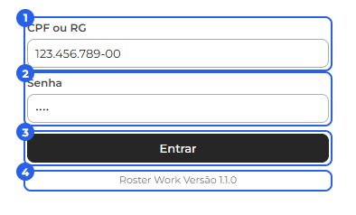
O que as mensagens indicam. "Usuário não encontrado" aparece quando o documento não está no sistema. "Procure um administrador para liberar o seu acesso" aparece quando você está cadastrado mas ainda não criou a sua conta: peça ao administrador o link de cadastro (veja Criar conta). "Senha incorreta" aparece quando a senha não confere. Depois de cinco senhas erradas seguidas, o login daquele CPF fica bloqueado por 15 minutos, com a mensagem "Muitas tentativas erradas. Tente de novo em N minutos."; nesse tempo, nem a senha certa entra. "Muitas entradas seguidas nesta rede" aparece quando muita gente entrou pela mesma internet em poucos minutos, como num treinamento: aguarde alguns minutos e tente de novo.
Já entrou antes? Enquanto a sua sessão estiver ativa, o sistema abre direto na tela inicial, sem pedir o login de novo. Sem o Manter-me conectado, a sessão termina ao fechar o navegador ou depois de 2 horas sem uso. Com ele, ao abrir aparece só o círculo de carregando, e o sistema abre sozinho. Sem internet, ou se o sistema estiver fora do ar, aparece o aviso e o botão Tentar de novo. Para desligar, use Sair no menu do canto (seu nome).
Se esqueceu a senha, procure pessoalmente o administrador da sua unidade. Ele confere que é você e manda, no seu privado (WhatsApp ou e-mail), uma mensagem com o link de nova senha e a data e a hora em que o link expira.
O link abre a tela Nova senha. Informe o seu CPF e clique em Continuar.
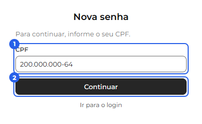
Com o CPF certo, aparece o seu nome: digite a nova senha duas vezes, com ao menos 6 caracteres, e salve. Depois é só entrar com a senha nova; até lá, a senha antiga continua valendo.
Sobre o link. Ele é pessoal, serve uma vez e vale por 24 horas. Vencido, já usado ou cancelado, a tela avisa; peça um novo ao administrador. "Este CPF não confere com o link" aparece quando o CPF digitado não é o da pessoa para quem o link foi gerado; depois de cinco tentativas erradas, o link é cancelado.
A sua conta nasce de um link de cadastro que o administrador gera na sua ficha e manda no seu privado, com a data e a hora em que ele expira. A tela de criar conta só abre por esse link. Ao abrir, ela pede o seu CPF.
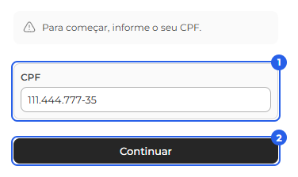
Com o CPF certo, a tela mostra o seu posto e o seu nome, para você ver que o link é seu, e pede só o celular, o e-mail e a senha. Digite a senha duas vezes, igual nas duas, para evitar erro de digitação. A senha é sempre escolhida por você; o administrador nunca a define.
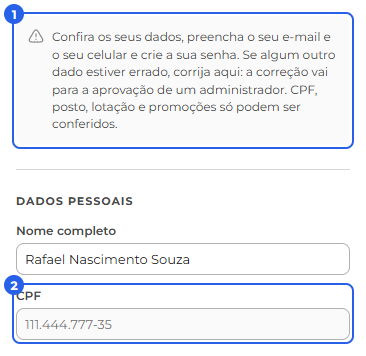
E-mail e celular são seus e valem na hora. Se o administrador já os cadastrou, eles aparecem preenchidos: confira e corrija se for preciso. Os seus outros dados (nome, RG, nascimento, CNH, posto, lotação, datas de promoção e afins) você confere depois de entrar, em Meu perfil; se algum estiver errado, corrija em Meus dados.
Termos de uso e privacidade. Antes de criar a conta, marque Li e estou ciente dos Termos de uso e privacidade; a marcação é obrigatória. Ler os termos abre o texto em outra aba, e o que você já preencheu continua na tela.
Ao clicar em Criar conta, a sua conta é criada e você já entra com o seu CPF e a senha.
Sobre o link. Ele é pessoal, serve uma vez e vale por 24 horas. Vencido, já usado ou cancelado, a tela avisa; peça um novo ao administrador. Depois de cinco CPFs errados, o link é cancelado. Nenhum dado seu aparece na tela antes do CPF certo.
Os Termos de uso e privacidade explicam as regras de uso do sistema e o que ele faz com os seus dados: quais dados guarda, para quê, quem vê, onde ficam, por quanto tempo e quais são os seus direitos. Eles abrem em outra aba pelo atalho Termos e privacidade, no menu do canto (seu nome).
Ciência. Você confirma que leu os termos ao criar a conta. Se você ainda não confirmou, ou quando os termos ganham uma versão nova, uma janela aparece ao entrar: Ler os termos abre o texto, Estou ciente registra a sua ciência e libera o sistema, e Sair encerra a sessão.
Onde ver a sua ciência. Em Meu perfil, na seção Privacidade da aba Perfil, aparecem a versão de que você está ciente e a data.
Depois de entrar, o sistema mostra sempre a mesma moldura em volta: o menu à esquerda, o cabeçalho no topo e a área de conteúdo no meio, que muda conforme a tela que você abre.
Menu (à esquerda). Lista as áreas do sistema. Clique numa para abri-la, e a área aberta fica destacada.
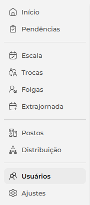
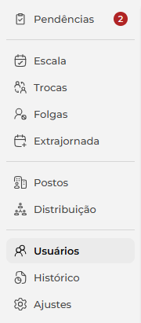
No pé do menu, o botão Recolher menu encolhe a barra para sobrar espaço. Recolhida, aparece só o ícone, e o nome surge ao passar o mouse. Essa escolha fica salva para os próximos logins.
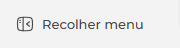
Além das áreas comuns, o administrador tem o Histórico (auditoria). As áreas de gestão (Postos, Distribuição, Usuários e Ajustes) o usuário comum também abre, mas só para consulta; as ações de administrador ficam escondidas para ele.
Seletor de unidades (ao lado do logo). É ele que decide quais unidades aparecem nas telas (Escala, Usuários e outras). Clique para abrir a árvore, marque as unidades que quer ver (1) e clique em Aplicar (2).
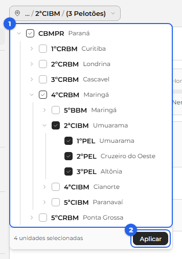
Começa na sua lotação. Quem é do comando vê a companhia e os pelotões; quem é de um pelotão vê a companhia e o próprio pelotão. A escolha vale só naquela sessão: no próximo login, volta ao padrão.
O canto direito do cabeçalho. Reúne três atalhos:
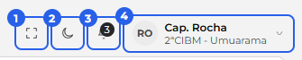
No celular, o sistema se ajusta à tela do aparelho. O menu vira uma barra embaixo, com Início, Escala, Trocas, Folgas e Mais. Toque em Mais para ver as outras telas (Pendências, Extrajornada, Postos, Usuários e Ajustes); o número no Mais é o de pendências esperando a sua decisão. Para fechar o Mais, arraste a folha para baixo ou toque fora dela.
No topo ficam o seletor de unidades, o sino e o seu avatar (o tema claro ou escuro muda em Meu perfil). Ao rolar a lista para baixo, o topo sai para dar mais espaço. Para trazê-lo de volta, toque na abinha no alto da tela (ou puxe-a para baixo), ou volte ao começo da lista.
Os detalhes e os formulários abrem na tela inteira: para fechar, toque no X ou use o voltar do celular. Nos botões que só têm ícone, segure o dedo sobre o botão para ver o nome dele.
A Escala no celular. Ficam o Dia e o Mês, com a Agenda e o Calendário (Militares e Colunas, só no computador). Na Agenda, aparece uma unidade por vez, começando pela sua: escolha a unidade no botão à esquerda dos ícones, ou deslize a tela para o lado. No Calendário, todas as unidades aparecem no dia. A Agenda e o Calendário da Extrajornada funcionam do mesmo jeito.
Só no computador. A Distribuição não aparece no menu do celular; quem chega a ela por um aviso ou um link vê "Esta tela só funciona no computador.".
Instalar o app no celular. O sistema pode ficar na tela do seu celular como um app, com o ícone do Roster Work, abrindo em tela cheia, sem passar pela loja. No menu do canto (seu nome), toque em Instalar no celular. No Android, confirme na janela que o navegador abre. No iPhone, abra o sistema no Safari, toque em Compartilhar e depois em Adicionar à Tela de Início. No app, a caixa Manter-me conectado já vem marcada: ele continua conectado até ficar 30 dias sem uso. As novidades do sistema chegam sozinhas ao app.
O Histórico também só funciona no computador.
É a sua página pessoal. Abre pelo menu do canto (seu nome) em Meu perfil, e tem três abas: Perfil, Meus dados e Segurança.
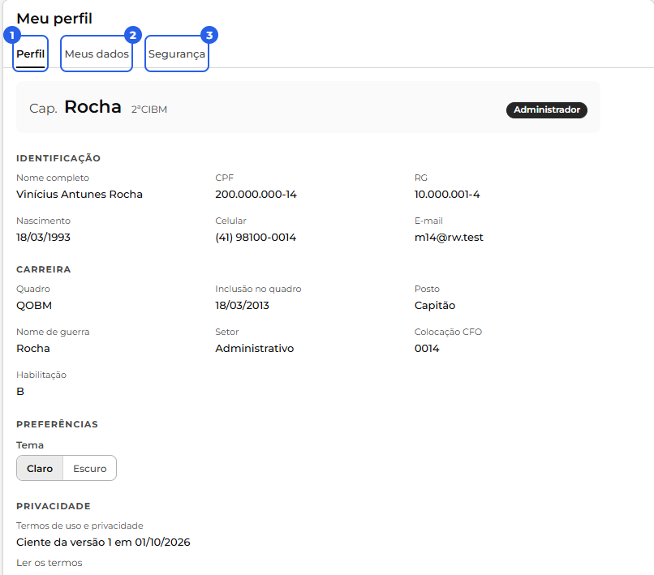
Perfil (1). Mostra o seu cartão de identificação (grau, nome de guerra, lotação e o seu papel no sistema) e os seus dados em leitura, separados em Identificação e Carreira. No fim, em Preferências, você escolhe o Tema, que muda na hora: Automático (o padrão: acompanha o claro ou escuro do seu celular ou computador e muda sozinho quando ele troca), Claro ou Escuro. Em Privacidade, vê de qual versão dos Termos de uso e privacidade você está ciente e quando, com o atalho Ler os termos.
Meus dados (2). É onde você muda os seus dados. Um aviso no topo lembra a regra: e-mail e celular são salvos na hora; as demais alterações passam pela aprovação do administrador.
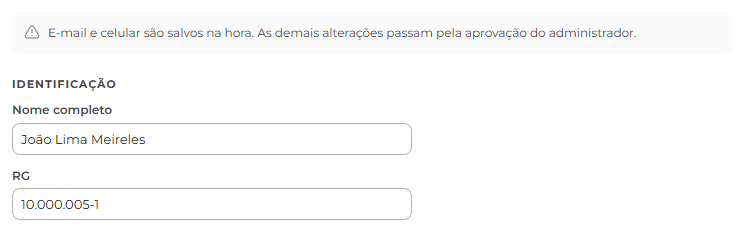
Altere os campos que precisar. O campo mexido fica destacado e aparece um contador ("1 alteração a enviar"). Depois, clique em Salvar alterações para mandar tudo de uma vez, ou em Desfazer para voltar ao que estava.
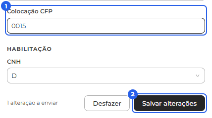
Datas de promoções. Depois da Carreira, há um campo para cada posto depois do primeiro. Preencha as datas que faltam e corrija as que estiverem erradas; a que você não souber pode ficar em branco, mas uma data já cadastrada não pode ser apagada. Se você é praça, o seu primeiro posto (Soldado 2ª Classe ou 3ª Classe) aparece no alto com a data de inclusão, porque a data dele é a de inclusão: mudar uma muda a outra. As datas seguem a ordem da carreira, e nenhuma pode ser antes da data de inclusão.
Data de inclusão. É o seu início na corporação, a data do seu primeiro posto: quem foi incluído a partir de 01/11/2024 começa como Soldado 3ª Classe; antes disso, como Soldado 2ª Classe. As datas de promoção são as dos postos seguintes, e nenhuma pode ser antes da data de inclusão. Se você é oficial e foi praça, as datas daquele tempo ficam à parte, só como registro.
O que vale na hora e o que vai para aprovação: e-mail e celular são seus e valem assim que você salva, com um resumo do que mudou. O resto você solicita: o pedido fica pendente até um administrador aprovar, inclusive a CNH, que decide se você pode ser escalado como condutor. Abaixo do formulário, em "Minhas solicitações", você acompanha cada pedido pelo status: Pendente, Aprovada ou Recusada. O CPF não entra (é o seu login), e grau e lotação também não (mudam só por promoção ou transferência).
Segurança (3). Aqui você troca a sua senha: digite a senha atual, a nova (ao menos 6 caracteres e diferente da atual) e confirme. A senha muda na hora, sem precisar de aprovação.
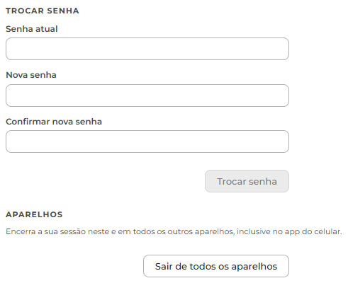
Aparelhos. O botão Sair de todos os aparelhos encerra a sua sessão neste e em todos os outros aparelhos, inclusive no app do celular e nos computadores em que você marcou Manter-me conectado. Use quando esquecer a caixa marcada num computador de uso coletivo ou perder o celular. O sistema pede confirmação e volta à tela de login.
Algumas telas organizam a informação pela árvore de unidades: a sua corporação em hierarquia (companhia, pelotão, e assim por diante). Você a encontra, por exemplo, em Trocas (aba Todas), Usuários, Postos e na Escala (modo Dia).
Como ela se monta. Cada unidade que você marcou no seletor de unidades (no topo da tela) aparece num bloco cinza, um embaixo do outro. No título do bloco ficam o nome da unidade, a sigla e a cidade, com uma contagem ao lado, e dentro dele fica o conteúdo daquela tela (os militares, as trocas, as instalações…).
A trilha no alto. Acima dos blocos, a trilha mostra as siglas das unidades de cima, por exemplo CBMPR › 4ºCRBM, e situa a lista. Enquanto você rola, a trilha e o título do bloco ficam presos no topo, então você sempre sabe em qual unidade está. Quando o bloco de uma companhia termina e começa o de um pelotão dela, a companhia passa para a trilha (CBMPR › 4ºCRBM › 2ªCIBM) e o título do pelotão fica logo abaixo.
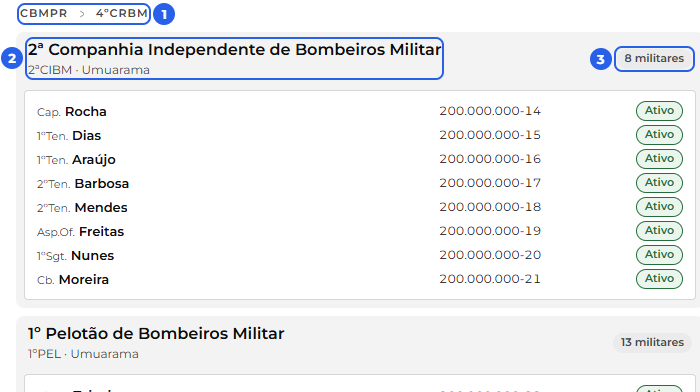
Você tem duas telas para ver quando e onde trabalha: o Início (o seu mês) e a Escala (a visão completa da unidade).
O Início (o seu mês). Assim que você entra, o Início mostra o seu mês num calendário, com o dia de hoje no círculo escuro. Cada dia em que você trabalha traz o mesmo ícone da Escala: Serviço, Extra ou Troca. O serviço que deixou de ser seu, por uma folga ou por uma troca, aparece com o ícone apagado. As férias, licenças e dispensas aparecem listradas, com a sigla (FÉR, LIC ou DIS). As setas mudam o mês, o botão Hoje volta ao mês atual e o botão Legenda explica os ícones. Lembre que o dia de serviço vai das 08h às 08h do dia seguinte: até as 08h, "hoje" ainda é o dia anterior.
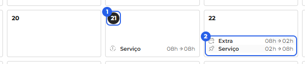
Os horários do dia. Clique num dia para ver, embaixo do calendário, os seus horários naquele dia, com o ícone de cada um. Ao entrar, o Início já mostra o seu próximo serviço.
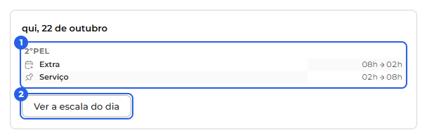
A escala completa do dia. O botão Ver a escala do dia abre, ao lado, a escala inteira daquele dia: os postos, as funções, os colegas e as observações, com o seu nome destacado. Esse painel é só para consultar; para mudar alguma coisa, peça uma troca ou uma folga. No celular, ele abre na tela inteira.
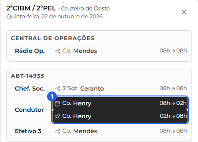
Avisos. Ao lado do calendário ficam os comunicados mais recentes para você (a caixa só aparece quando há algum). Quando nem todos cabem na tela, o botão Ver todos abre a página Avisos.
Pendências. Embaixo dos avisos, a caixa Pendências mostra o que é seu, cada item com um selo que diz em que pé ele está: primeiro o que espera você, como a troca que um colega pediu a você (1); depois os seus prazos, como o da extra do mês seguinte; os seus pedidos em andamento, esperando a aprovação (2); e os seus pedidos resolvidos nos últimos 30 dias, aprovados, recusados ou cancelados (3). Clicar no que espera você abre o pedido ao lado, para responder ali mesmo; clicar num pedido seu leva à página dele, Trocas ou Folgas. Quando não há nada, a caixa não aparece; quando nem tudo cabe na tela, o Ver todos abre a página Pendências.
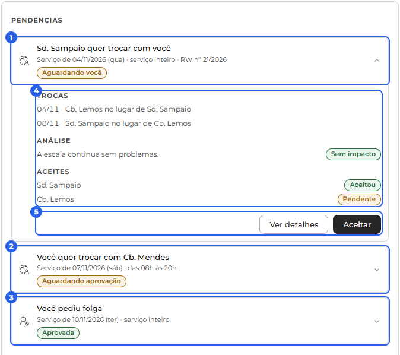
Para o administrador, a caixa Pendências tem duas abas: Para mim (o que é seu, como acima) e Administração (os pedidos da sua área para decidir e o que precisa ser corrigido, como militares fora da escala). O número de cada aba conta só o que depende de você. Clicar num pedido para decidir abre a decisão ao lado, a mesma da página Pendências.
Atalhos. No computador, à direita, os Atalhos levam direto ao Solicitar troca, ao Solicitar folga e ao Solicitar extra, e a Escala de hoje abre a escala do dia de hoje. Quando um painel abre, ele aparece por cima do lado direito da tela, sobre os Atalhos e parte dos avisos e das pendências, e nada sai do lugar; ao fechar o painel, tudo volta a aparecer. Numa tela menor, como a de um notebook, o calendário fica um pouco menor para os avisos continuarem ao lado.
A Escala (visão completa). A página Escala mostra a escala da unidade, dia a dia. Para achar alguém rápido, use a busca Pesquisar militar e digite um nome (também vale CPF ou RG). A busca tem dois modos, no botão ao lado do campo: Marcar (o padrão), que realça o militar na grade mantendo os demais visíveis, e Filtrar, que mostra só quem você procurou.
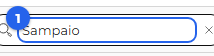
Filtrar a escala. Nos modos Mês e Colunas, antes da busca, fica o botão Filtros. Ele abre duas colunas: Graus, para ver só os graus que você marcar (por exemplo, só cabos e soldados), e Situação, para ver só um tipo de serviço: Prontidão (quem está no ciclo, os contínuos), Trocas, Extrajornada, Pontual ou Folgas. Quem está de férias, licença ou dispensa aparece quando você marca Afastamentos, numa linha listrada que diz até quando vai o afastamento (por exemplo, "Férias até 15/10"). Afastamentos soma ao que já está marcado: com Todos, aparecem todos e mais os afastados; para ver só os afastados, desmarque Todos. O número no botão diz quantos filtros estão ligados, e a linha Filtros, embaixo da barra, mostra quais: o x de cada etiqueta tira só aquele filtro, e Limpar filtros tira todos. Os filtros voltam vazios quando você sai da página.
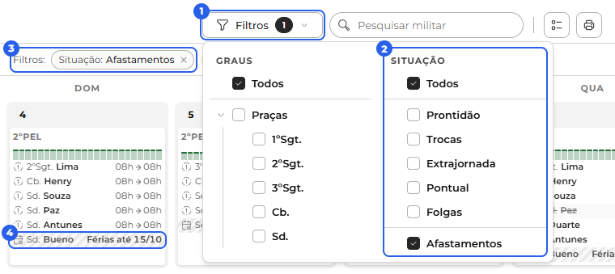
Os dias de serviço do militar ficam destacados na grade, com o horário. O espaçamento entre eles segue o ritmo configurado para a unidade, como o 24/48, e pode variar de uma unidade para outra.
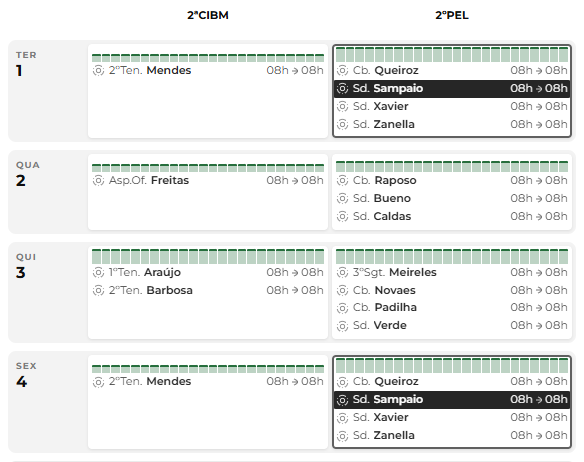
Sempre em hoje. A Escala abre no dia de hoje, já rolada até ele, com o começo de hoje no alto e uma pontinha do que veio antes à vista: na Agenda, o fim do dia anterior logo acima; no Calendário, o fim da semana anterior. Quando você passa com as setas para outro dia, semana ou mês, aparece o botão Hoje logo depois da seta da direita: um clique volta para hoje.
A Escala tem vários modos de ver: Dia, Militares, Mês e Colunas. Todos mostram a mesma escala, de jeitos diferentes; use o que for melhor para você. Ela abre no último modo que você usou.
A base da escala é o ciclo. O administrador também pode escalar um militar num dia avulso, e a cada dia as pessoas de serviço são distribuídas nos postos. Entender essas ideias ajuda a ler a escala e os ícones dela.
Contínuos. A maior parte do efetivo entra na escala por um ciclo: a unidade tem um ritmo, por exemplo 24/48 (24 horas de serviço e 48 de folga), e cada militar roda nesse ritmo. Definido o dia em que começa, o sistema projeta sozinho os próximos serviços dele, por meses à frente. Os contínuos são os militares que estão na escala de forma regular, por esse ciclo.
Pontuais. O administrador pode escalar um militar só num dia, fora do ciclo, em um ou mais horários, inclusive um militar de outra unidade. Ele trabalha naquele dia e segue fora do ciclo nos demais.
A distribuição do dia. Ao clicar num dia na grade, abre um painel à direita com aquele dia montado: no alto, a unidade e a data e, abaixo, os postos, as funções e quem está em cada uma. Embaixo da data ficam as abas: Dia, com o dia montado, e Extrajornada, com quem está de extra naquele dia e naquela unidade, com o horário. O extra que ainda não foi inserido na escala aparece com o selo "Não inserido na escala".
No alto ficam os avisos do dia, em vermelho os erros graves e em amarelo as ressalvas (a lista completa está em Erros e ressalvas da escala, logo abaixo), e o horário em que uma função ficou sem ninguém aparece em vermelho, com a função também vermelha. Depois dos postos vêm Sem função (com o título vermelho: quem está de serviço sem função em algum horário), De folga e as Observações. O painel mostra os postos que têm alguma função no dia. Um posto com menos gente que o efetivo mínimo entra nos avisos, por exemplo "Efetivo abaixo do mínimo: ABT-01 (2 de 3)", com o horário quando isso acontece só numa parte do dia. Quando outra viatura serve no lugar de uma por alguns dias, o painel mostra o prefixo dela e, embaixo, de qual viatura e até quando, por exemplo "No lugar da ABT-14935 até 25/10".
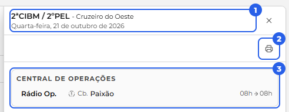
Ao lado do nome de cada militar, a escala mostra ícones. Eles falam de coisas diferentes: uns dizem por que o militar está trabalhando, outros marcam quem deixou o serviço, e outros falam da função, do próprio militar ou das observações do dia.
Origem do serviço. Diz por que o militar está trabalhando naquele dia. Toda linha de serviço tem um, e só um, destes ícones. Quando o dia do militar tem partes de origens diferentes, ele aparece numa linha para cada parte.
Nome riscado. Marca quem deixou o serviço naquele dia. Na grade da escala, o nome aparece riscado, como em 3ºSgt. Meireles, e com dois ícones: a origem que o militar tinha no dia e o motivo da saída. Na célula, os nomes riscados ficam no fim da lista, depois de quem está de serviço: primeiro os de folga, depois os de troca, cada grupo pela antiguidade. Quem passou só parte do serviço aparece duas vezes: entre os de serviço, com as horas que cumpre, e riscado no fim, com as horas que passou. No painel do dia, essas saídas ficam na caixa Observações.
Função. Fala do lugar que o militar ocupa no dia.
Militar. Fala do próprio militar.
Observações. Fala do dia como um todo.
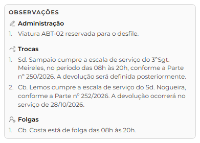
Na tela, a mesma explicação fica na Legenda: no alto da página Escala, à direita, o botão da Legenda (o ícone de quadradinhos com linhas, ao lado da impressora) abre uma caixa com o que aparece no modo em que você está. No modo Militares, a caixa mostra os selos da grade, e no modo Dia, os ícones do painel. Nas grades de Mês, Colunas e Calendário, ela traz todos os ícones e explica também o gráfico de cobertura no alto de cada célula, que pinta cada hora de uma cor:
Parando o mouse sobre o gráfico, aparecem a hora e quantos militares estão de serviço, e a faixa de cada militar mostra em claro o trecho do turno.
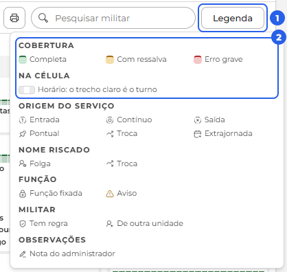
Cada tela mostra uma parte desses ícones:
Militar afastado não vai assumir. Pode acontecer de um militar assumir um serviço por troca e, mais tarde, entrar de férias, licença ou dispensa naquele mesmo dia. Nesse caso ele continua na lista do serviço, mas com um aviso amarelo: na prática ele não vai assumir, porque está afastado.
Ao lançar o afastamento, o administrador é avisado de que aquele militar cobre um serviço por troca e decide se segue; seguindo, o serviço fica marcado em amarelo, na linha do militar e na lista de avisos do dia, para a cobertura ser resolvida.
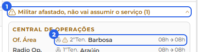
A escala usa duas cores para avisar que algo não está certo. O vermelho é um erro grave: a escala não funciona como está e precisa de correção. O amarelo é uma ressalva: a escala funciona, com um erro aceitável.
Na grade, o erro aparece só pela cor das barras do gráfico de cobertura, hora a hora. Para saber o que é, clique na célula: o painel do dia lista os avisos no alto, primeiro os vermelhos e depois os amarelos, e marca o militar envolvido. A lista traz só os erros principais: o que acontece por causa de outro erro não aparece à parte. Quando falta o modelo, por exemplo, ela mostra a falta do modelo, sem repetir quem ficou sem função e os postos vazios; quando uma viatura trava, mostra a viatura, sem repetir a tripulação; quando um posto fica abaixo do mínimo, não repete o chefe que assumiu a direção nele. Corrigido o principal, o que ainda estiver errado aparece na lista. Os vermelhos vão da causa para a consequência: primeiro o modelo, depois quem ficou sem função, os postos e, por último, o militar em situação errada. Parando o mouse sobre ele, aparece o motivo.
Erros graves (vermelho).
Ressalvas (amarelo).
Alterações manuais. Quando o administrador corrige um erro, a hora volta ao verde. O rastro fica no rodapé do painel do dia: as Alterações manuais, com a quantidade ao lado. Ao abrir, aparecem quem mexeu, quando e o quê, entre os ajustes da distribuição, os militares pontuais e as entradas e saídas do ciclo daquele dia. Todos podem ver. Num dia sem alteração, o rodapé não aparece.
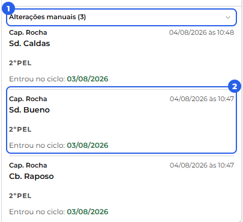
Para levar a escala ao papel ou enviar por mensagem, use o botão com o ícone de impressora, no alto da página Escala, o último à direita, depois da Legenda. Ele aparece em todos os modos e para todos.
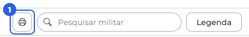
No modo Dia e no Militares, o botão abre, à direita, o painel Imprimir escala:
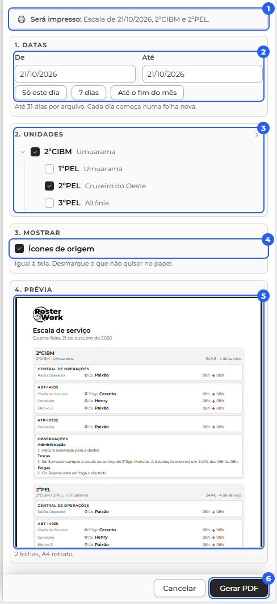
Ao clicar em Gerar PDF, o arquivo é baixado, pronto para imprimir ou compartilhar. Cada dia começa numa folha nova, com as unidades em sequência e o mesmo conteúdo do modo Dia: os postos, as funções, quem está em cada uma, os horários e as Observações. No alto da folha fica só a logo, e no rodapé o endereço do site e o número da página.
Uma unidade que cabe numa folha nunca é dividida: se não couber no espaço que sobrou, ela vai inteira para a folha seguinte. A unidade maior que uma folha continua na seguinte só entre um posto e outro, com o nome repetido, a marca (continuação) e a data.
Na Agenda, no Calendário e no Colunas, o mesmo botão abre o painel da grade que está na tela (Imprimir agenda, Imprimir calendário ou Imprimir colunas). Sai o que você está vendo: o mês da tela (no Colunas › Unidades, a semana da tela), as unidades da tela e os filtros ligados. Uma nota no alto do painel resume o que vai sair. Para imprimir outro mês ou outras unidades, mude a tela antes de abrir o painel. O PDF sai do jeito da tela: o Calendário e o Colunas › Dias em A4 paisagem, a Agenda e o Colunas › Unidades em A4 retrato.
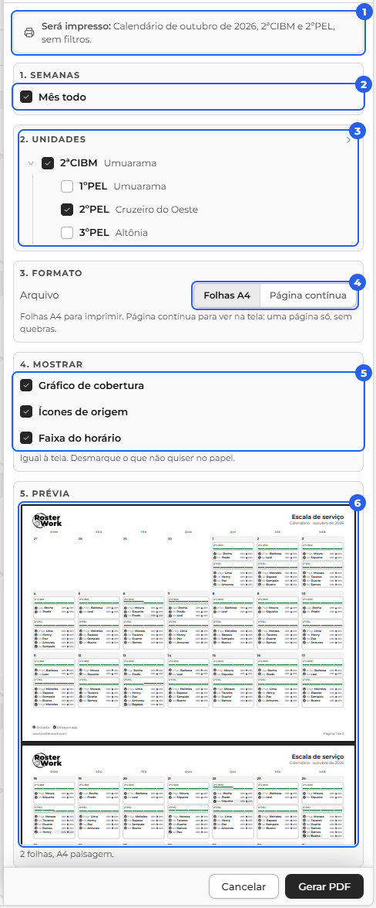
No papel, uma semana do Calendário nunca é dividida: se não couber no espaço que sobrou, ela vai inteira para a folha seguinte. Os dias de outro mês, no começo e no fim do Calendário, saem vazios, como na tela. Só quando uma semana sozinha é maior que uma folha (muitas unidades na tela), ela continua na seguinte entre uma unidade e outra, com os dias repetidos e a marca (continuação). Na Agenda, o dia nunca é dividido e cabem até 4 unidades lado a lado; com mais, os dias se repetem com as outras unidades.
No painel do dia, você monta quem está no ciclo pela aba Ciclo, que só o administrador vê. Ela já abre pronta para editar, e uma nota no alto lembra que as mudanças valem a partir daquele dia e seguem nos próximos. Cada mudança fica marcada na tela e o Salvar aplica todas de uma vez.
O ciclo. A aba mostra, em "Contínuos do dia", quem o ciclo escala naquele dia (quem está de folga aparece riscado) e, em "Fora da escala", quem não está no ciclo. Ali, você coloca e tira militares da escala:
Cada mudança recebe um selo ("Vai entrar" ou "Vai sair") e o Salvar aplica todas de uma vez, recalculando a escala uma única vez.
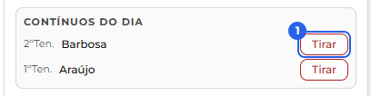
Tirar do ciclo mexe no que dependia dele. Ao clicar em Tirar, e também ao dar baixa ou transferir, a janela de confirmação mostra a lista do que vai acontecer a partir da data: cada troca, folga e extra do militar e o que acontece com ela. O que já aconteceu não é desfeito. A troca em que nenhuma parte aconteceu é cancelada inteira; se uma parte já aconteceu, só a outra sai e fica um saldo entre os dois, em Trocas, na aba Saldos. A troca de outros dois militares feita sobre um serviço que sai também é cancelada, e aparece na lista. As folgas que ainda não aconteceram são canceladas, e as horas descontadas voltam ao saldo. As extras saem da escala e da Extrajornada, e as horas voltam para a cota dele. Quem tinha troca ou folga cancelada recebe um aviso, e os dois militares de uma troca que perdeu uma parte recebem o aviso "Troca alterada", com o saldo. O que foi cancelado não volta, mesmo que o militar volte ao ciclo depois.
Só naquele dia. Para escalar um militar só num dia, sem entrar no ciclo, use o Adicionar militar da aba Dia (veja Ajustar o dia, logo abaixo).
Na aba Dia do painel do dia, você ajusta aquele dia. Para o administrador, a aba já abre pronta para editar: a lista é a mesma que todos veem, com o botão Adicionar militar no alto do painel, o lápis em cada linha e, ao lado do nome de cada posto, o botão Editar posto. As mudanças valem só para aquele dia e não precisam de Salvar: cada uma grava na hora, e a escala da página já mostra o dia atualizado.
Desfazer e Refazer. Os ícones no alto do painel, à direita, desfazem a última mudança e a refazem (também pelo teclado: Ctrl+Z desfaz e Ctrl+Y refaz). Valem para as mudanças feitas enquanto o painel está aberto naquele dia; ao fechar o painel ou trocar de dia, começam do zero. Desfazer não manda aviso a ninguém: se você deu folga a um militar e desfez, ele não recebe aviso de folga cancelada.
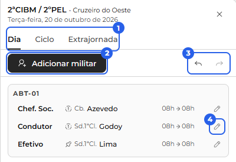
Adicionar militar. Abre um formulário em três partes:
Ao clicar em Adicionar ao dia, o sistema pergunta se as horas entram no banco de horas do militar (Contabilizar ou Não contabilizar). Quem vem de outra unidade trabalha aqui só naquele dia; se ele for de outra companhia, os administradores da área dele recebem um aviso no sino.
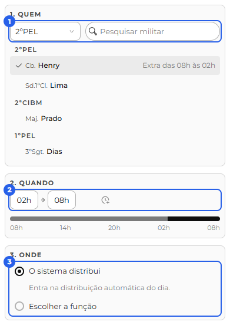
O militar no dia. O lápis de uma linha abre o dia daquele militar: uma régua com o serviço dele e as Funções no dia.
Clique em Aplicar para gravar a mudança e voltar à lista.
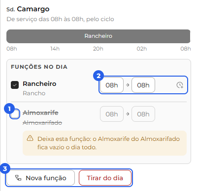
Horário sem ninguém. Quando você tira alguém de uma função num horário, esse horário fica vermelho, com o botão Sem ninguém, escolher. Ele abre o mesmo formulário, já com a função e o horário, e mostra também quem está de serviço sem função nesse horário. A linha mexida tem ainda o ícone Voltar ao automático, que desfaz o ajuste.
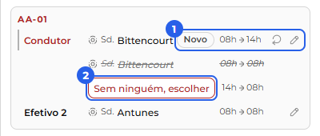
O que você muda nas funções ganha o ícone de Função fixada (cadeado), fica por cima do automático e continua valendo mesmo quando o sistema recalcula a escala. Quando alguém entra ou sai do dia, o sistema refaz a distribuição automática daquele dia, e a lista mostra na hora como ficou.
O Chefe de Socorro e o Oficial de Área são sempre o mais antigo de serviço, conforme a normativa, e ficam travados: não dá para tirar, trocar nem mudar o horário deles. Se você puser no dia alguém mais antigo, ele assume o papel, e a lista avisa no alto quem assume no lugar de quem.
As observações do dia ficam no fim da lista, em grupos: Administração, Trocas, Folgas e De outra unidade. O botão Adicionar observação inclui uma nota no grupo Administração, e o ✕ exclui as suas. Elas também gravam na hora.
As regras de cada militar valem também para os seus ajustes. Colocar um condutor sem a CNH exigida pela viatura, ou um militar numa função que a regra dele proíbe, não grava: o sistema avisa o motivo e a lista fica como estava. O mesmo vale para o horário fora do serviço do militar, dois militares no mesmo horário, o militar em duas unidades ao mesmo tempo e o posto acima do efetivo máximo. Se o dia já tinha um erro em vermelho de antes, ele não impede as outras mudanças, e você o corrige quando quiser. Colocar um militar exclusivo fora da sua função, ou com grau diferente do ideal, fica em amarelo e grava normalmente.
Se outro administrador mexer no mesmo dia enquanto o seu painel está aberto, a sua próxima mudança não grava: o sistema avisa, mostra o dia atualizado e você faz a mudança de novo.
O botão Editar posto, ao lado do nome de cada posto no painel do dia, abre o posto no lugar da lista. Em qualquer posto, você muda o efetivo mínimo, ideal e máximo, que vale para todos os dias. Na viatura, você também troca a viatura: o prefixo e a CNH exigida, escolhida nas letras de A a E.
Quando o prefixo ou a CNH mudam, aparecem A partir de, já com o dia do painel, e Até, que é opcional:
A guarnição continua a mesma e os modelos da Distribuição não mudam. A mudança de CNH refaz a escala dos dias da troca, porque decide quem pode dirigir. Se o prefixo digitado já está em outro posto naqueles dias, mesmo de outra unidade, um aviso amarelo diz onde, e você pode salvar assim mesmo. Para trocar para sempre, o prefixo não pode ser o de outra viatura cadastrada.
Clique em Salvar: o sistema mostra o resumo do que mudou e a lista volta já atualizada. O Desfazer do painel não desfaz o Editar posto; para voltar atrás, edite o posto de novo.
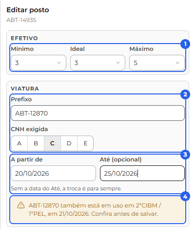
A página Pendências, logo abaixo do Início no menu, reúne o que falta você fazer. O número ao lado do nome, no menu, conta quantas coisas esperam você, e cada uma some quando é resolvida. Em Esperando sua resposta fica a troca que um colega pediu a você: ela aparece como um cartão, com quem pediu, o dia do serviço e o resultado da análise. O mesmo pedido também está na aba Pendências da página Trocas.
Prazos. Embaixo, quando há algum, ficam os seus prazos. Hoje é o da extra do mês seguinte: nos últimos dias, se você ainda não respondeu, aparece a contagem regressiva, como "Faltam 3 dias para solicitar a extra de novembro", com a data em que o prazo fecha. Clicar abre o pedido da extra, e o prazo some quando você responde, sim ou não.
Clicar no cartão abre o pedido no painel à direita:
No rodapé ficam Recusar e Aceitar (3). Aceitando, a troca segue para a aprovação de um administrador. Recusando, você pode escrever o motivo, que vai no aviso para quem pediu, e a troca se encerra.
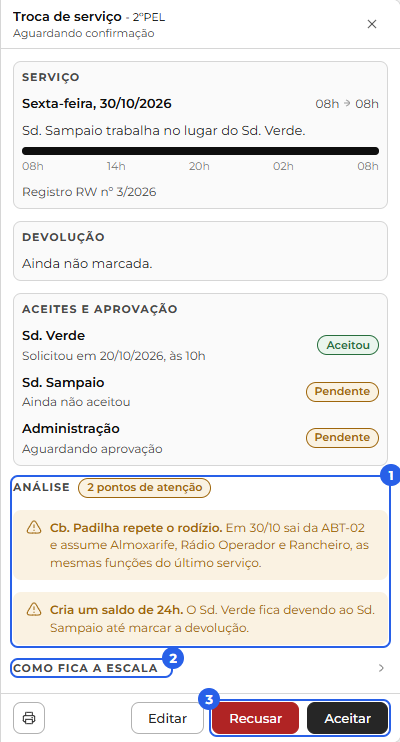
Para o administrador, a página tem duas abas: Para mim (o que é seu como militar) e Administração, com os pedidos que esperam a decisão de um administrador numa lista só: trocas, folgas e correções de dados. Os seus próprios pedidos também aparecem ali, e você pode decidi-los.
O seletor Todos · Trocas · Folgas · Usuários (1) filtra a lista. Cada cartão mostra o pelotão do pedido (2), porque você cuida de todos os pelotões da companhia, e o resultado da análise (3). A lista vem pela data do serviço, a mais próxima primeiro.
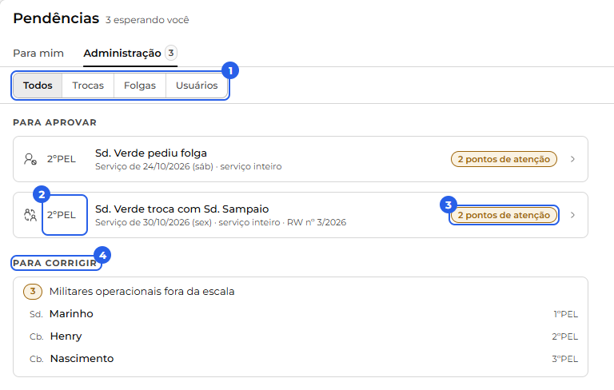
Para corrigir (4). Embaixo da lista fica o que precisa de conserto e não é um pedido: os militares operacionais fora da escala (com o nome e o pelotão, para acertar pela aba Ciclo da Escala; não conta quem está de férias, licença ou dispensa, nem quem já tem a entrada no ciclo marcada para os próximos 4 dias), os retornos de afastamento sem entrada no ciclo (nos 5 dias antes da volta, quem não estará no ciclo e ainda não tem entrada marcada, com a data da volta), a Distribuição a revisar (quando uma mudança de posto abriu um período que ainda precisa de revisão) e a Distribuição com erro (quando um período atual ou futuro tem erro vermelho); estas duas levam à Distribuição. Nada aqui tem "lido": cada item some sozinho quando alguém resolve. Cada assunto soma 1 no número do menu, por mais nomes que a lista tenha: dez militares fora da escala contam como um item só. Eles não aparecem no sino, que é só dos avisos.
De onde vêm. Você recebe e vê os pedidos e os lembretes da área do seu papel: o administrador de pelotão, os do pelotão dele; o de companhia, os da companhia e dos pelotões dela; o geral, os de todas as unidades. Isso vale para as folgas, as correções de dados e os lembretes (militar fora da escala, retorno de afastamento e Distribuição a revisar). Uma troca aparece para quem administra qualquer um dos dois militares: numa troca entre pelotões, os administradores dos dois pelotões e os da companhia podem aprovar, e vale a decisão de quem decidir primeiro.
O painel de decisão. Clicar no cartão abre o pedido, com o pelotão no título (1). Depois do pedido em caixas vem a Análise, com o resultado ao lado do título (2) e uma nota por ponto (3). Para montar a análise, o sistema aprova o pedido de mentira, refaz a escala do dia e compara com a de hoje, usando os mesmos avisos que a Escala mostra. Como na Escala, aparecem só os problemas principais: quando falta o modelo, por exemplo, a nota é só a da falta de modelo, sem uma para cada posto vazio. Cada nota diz quem, onde e quando:
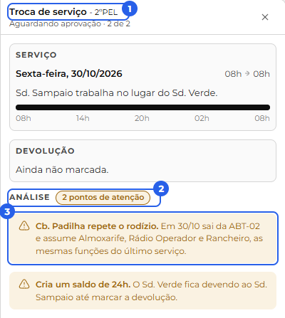
Como fica a escala. Ao abrir a seção, o dia inteiro aparece como ficaria: quem sai, riscado na função de onde saiu (1); quem o sistema mudou de lugar por causa do pedido, só com a barra cinza à esquerda (2); e quem entra pelo pedido, com o selo Novo (3). O selo Novo só existe aqui, antes de aprovar: depois, a escala mostra a troca ou a folga do jeito de sempre.
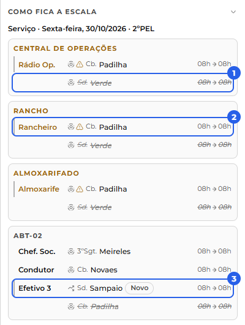
Aprovar ou recusar. O Aprovar fica disponível assim que a análise termina e pede uma confirmação. Quando a análise apontou um problema, o aviso é mais firme ("podem quebrar a escala. Aprovar mesmo assim?"): o sistema sinaliza, não trava, e a decisão é sua. Logo depois aparece um resumo com a opção de Desfazer. O Recusar abre, no próprio painel, a caixa do motivo (1), que é opcional e vai no aviso da recusa; Confirmar recusa (2) encerra o pedido e Voltar desiste. Depois de decidir, o painel abre o próximo pedido da lista.
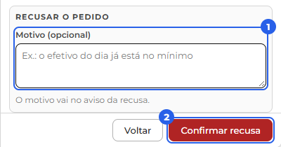
Também nas páginas do assunto. Os mesmos pedidos aparecem na aba Pendências da Trocas, da Folgas e da Usuários, com o mesmo cartão e o mesmo painel. Decidido num lugar, o pedido some dos dois.
Uma troca é quando você pede que outro militar cubra um serviço seu. Pode ser o turno inteiro ou apenas um período de horas dele, e você pode marcar uma devolução (um dia do colega que você cobre em retorno) ou deixar essa devolução para depois.
Como pedir. A troca é formalizada pela parte no E-protocolo. Se ela já existe, tenha o número à mão; se ainda não, você pode pedir a troca sem ele. Na página Trocas, clique em Solicitar troca. Abre um painel com três blocos:
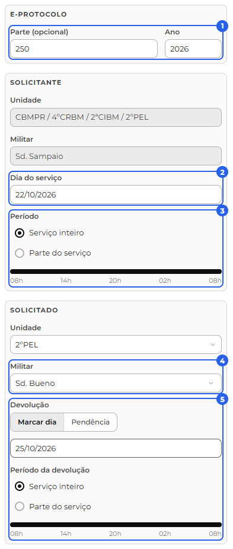
Ao confirmar, a troca nasce como "Aguardando confirmação" e segue para o militar que você escolheu. Se ele ainda não tem conta no sistema, não tem como confirmar: o painel avisa, e a troca nasce como "Aguardando aprovação" e vai direto para o administrador.
O mesmo serviço não entra em duas trocas no mesmo horário. Se ele já tem uma troca aguardando ou aprovada, o novo pedido é recusado.
Quando pedem uma troca a você. O pedido aparece na página Pendências, na aba Pendências daqui e nos seus avisos. Ao abri-lo, você vê o pedido, a análise e como fica a escala, e Aceita ou Recusa, podendo escrever o motivo. A parte Pendências deste manual mostra esse painel.
Acompanhar as suas trocas. A página Trocas tem quatro abas (1): Todas (as trocas da sua unidade), Minhas (as que você participa, como solicitante ou solicitado), Saldos (as dívidas de horas em aberto) e Pendências (o que espera a sua resposta). Cada troca traz um selo (2) com a situação: Aguardando confirmação, Aguardando aprovação, Aprovada, Recusada, Recusada pela administração, Cancelada ou Substituída (a troca de antes de uma alteração aprovada).
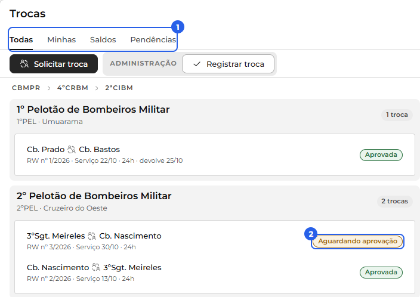
Cancelar a sua solicitação. Enquanto a troca está aguardando (confirmação ou aprovação), você pode abri-la e usar Cancelar troca. Depois de aprovada, apenas um administrador pode desfazê-la.
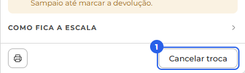
A troca aprovada na escala. Depois da aprovação do administrador, a troca passa a valer na escala. No dia trocado, o militar que passou o serviço aparece riscado e quem assumiu entra no lugar, os dois com o ícone de troca. Havendo devolução, o mesmo acontece no dia dela, com os papéis invertidos. No painel do dia, o grupo Trocas das Observações escreve a troca por extenso, com a parte do E-protocolo (quando a troca tem) e a devolução, por exemplo: "Sd. Sampaio cumpre a escala de serviço do 3ºSgt. Meireles, no período das 08h às 20h, conforme a Parte nº 250/2026. A devolução será definida posteriormente.".
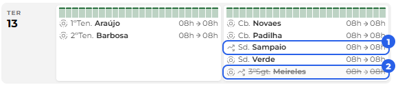
Devolução e pendências. Quando você marca a devolução, com o dia e o período do colega, as duas datas ficam casadas e ninguém fica devendo. Se a devolução tiver duração diferente do serviço, ou se você a deixar em Pendência, a diferença vira uma dívida de horas: quem passou o serviço fica devendo a quem cobriu. A aba Saldos reúne essas dívidas, você vê as que envolvem você e o administrador vê todas.
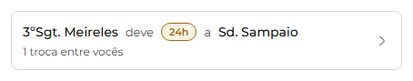
Ver o histórico e cobrar. Clique num card para abrir, à direita, o histórico entre vocês dois: cada troca vira uma linha com a data, quem folgou e quem trabalhou e as horas, para você ver de onde o saldo veio. Um Ver mais traz as trocas mais antigas.
Nesse painel, quem tem horas a receber usa o botão Cobrar: ele abre o Solicitar troca já apontado para quem deve, com as horas da dívida prontas no período do serviço. Você só escolhe qual dia seu o colega vai cobrir e confirma, e quando a troca é aprovada, a dívida é acertada.
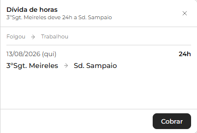
Quando você e o colega combinam outro dia, outro horário ou outra devolução, ou quando a parte do E-protocolo sai depois, a troca pode ser alterada. Na página Trocas, abra a troca (na aba Minhas, por exemplo) e clique em Editar, no alto do painel. Abre o mesmo formulário do pedido, já preenchido, com você e o colega fixos: mude a parte (1), o dia e o período do serviço (2) ou a devolução (3) e clique em Salvar. O solicitante e o solicitado podem alterar. Para trocar com outro colega, cancele e peça uma troca nova.
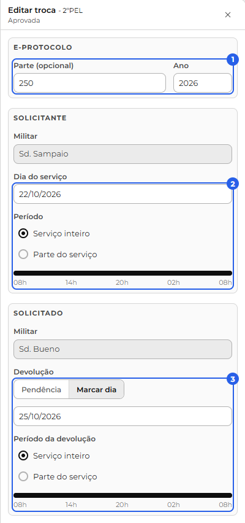
O que acontece ao salvar depende do que mudou:
O painel de uma alteração mostra a caixa Antes (1), com a troca como era, acima do serviço e da devolução novos. Quem pediu a alteração pode desistir com Cancelar alteração.
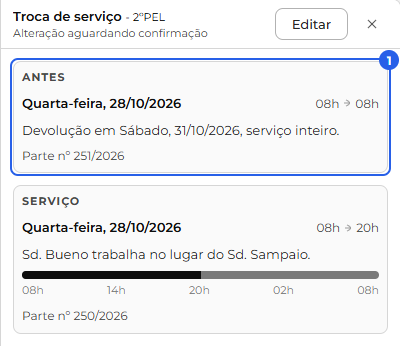
Uma alteração por vez: enquanto uma espera, a troca mostra o aviso no topo e fica sem o Editar. Só mudam os dias que ainda não chegaram. Se o serviço que a troca passou já foi trocado de novo com outra pessoa, cancele aquela troca primeiro: o sistema avisa qual é.
Depois que o colega aceita, a troca fica "Aguardando aprovação" e espera um administrador. Ela aparece na página Pendências e na aba Pendências daqui; o painel de decisão, a análise e o Como fica a escala estão explicados em Pendências › Decidir os pedidos. Na caixa Serviço, a troca mostra a Parte nº do E-protocolo, para você conferir antes de aprovar. Quando o colega não tem conta no sistema, a troca já chega aguardando a sua aprovação, e a análise avisa que ele não confirmou.
As ações. No rodapé do painel, o que aparece depende do momento da troca:
Numa troca da qual você participa, como quem pediu ou como o colega, você também vê os botões de decisão e pode aprovar ou recusar.
Aprovada, a troca passa a valer na escala (o riscado da seção anterior) e a dívida de horas entre os dois é acertada. Se, até lá, aquele horário do serviço já tiver sido trocado com outra pessoa, a troca não pode mais ser aprovada: a análise mostra isso em vermelho.
Afastamento depois da troca. Se, mais tarde, o militar que assumiu o serviço entrar de férias, licença ou dispensa naquele dia, quem lança o afastamento é avisado de que ele cobre um serviço por troca e decide se segue. Seguindo, a troca não é desfeita, mas a escala marca aquele serviço em amarelo, porque na prática ele não vai assumir.
Alterações. A alteração de uma troca aprovada chega como um pedido próprio, com o selo "Alteração aguardando aprovação" e a caixa Antes, e você aprova ou recusa como qualquer troca. Aprovada, só os dias que mudam são refeitos na escala. Você também pode alterar direto uma troca da sua área da qual não participa: na página Trocas, abra a troca e use Editar. A Análise aparece antes de salvar, como no Registrar, e a mudança vale na hora, sem o aceite dos dois; o dia pode ser de até 7 dias atrás.
Quando a troca chega pelo E-protocolo e não foi pedida no sistema, você mesmo a registra. Na página Trocas, clique em Registrar troca, no bloco Administração, ao lado de Solicitar troca. Abre o mesmo painel do pedido, com uma diferença no bloco Solicitante (1): em vez de você, escolha a unidade e o militar que passa o serviço. Depois preencha a parte do E-protocolo, o dia, o período, quem cobre e a devolução, como num pedido. O dia pode ser de até 7 dias atrás, para registrar uma troca que já aconteceu.
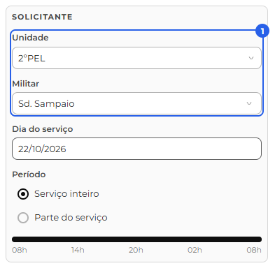
Com tudo preenchido, a Análise aparece no fim do painel, a mesma de quando você aprova uma troca, e o botão Registrar troca só libera quando ela chega. Ao confirmar, a troca já entra aprovada: a escala muda na hora e os dois militares recebem o aviso de troca aprovada. Se o registro foi um engano, o Desfazer do resumo apaga a troca e volta a escala ao que era.
Você não registra uma troca da qual participa: o seu nome não aparece nas listas. Se o militar já pediu a mesma troca no sistema, o registro é recusado e o aviso indica aprovar o pedido pela aba Pendências.
Tirar uma folga é deixar de fazer um serviço que já está escalado para você, descontando as horas desse serviço do seu banco de horas de folga. É um sistema separado da Extrajornada (que é hora paga pelo estado); as horas daqui não são hora extra.
O seu saldo. O saldo é o seu banco de horas: ele sobe quando o administrador contabiliza um serviço que você fez a mais, além do seu ciclo, ou faz um ajuste, e desce quando você tira folga. Pode ficar negativo (você fica devendo horas), e o sistema avisa na hora de pedir. Um pedido em aberto não mexe no saldo até ser aprovado.
Como pedir. Na página Folgas, o botão Solicitar folga, no alto da página, abre um painel. Escolha um dia em que você está de serviço e o período: o serviço inteiro ou só uma parte do serviço, marcando o início e o fim, com a régua do dia mostrando o trecho. Pode escrever um motivo. No fim, o painel mostra quanto o pedido consome do banco de horas e como fica o seu saldo. O pedido nasce como "Pendente", e as horas só saem do seu saldo quando ele é aprovado.
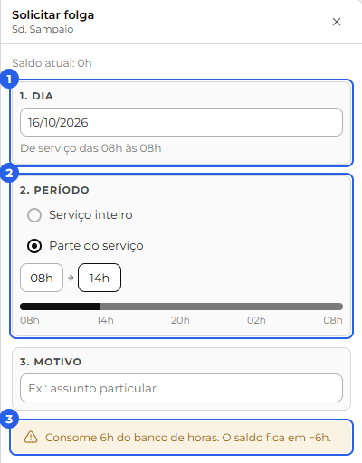
Aprovação e escala. Um administrador Aprova ou Recusa. Aprovada, a folga passa a valer: na escala, no dia da folga, você aparece riscado e as horas são descontadas do saldo. Recusada, encerra; a recusa pode trazer o motivo, que chega no seu aviso.
Acompanhar e cancelar. A aba Minhas folgas reúne o seu saldo em destaque, os pedidos em aberto e o seu extrato (os lançamentos que sobem e descem o saldo), cada um com a sua situação. Enquanto o pedido está "Pendente", você pode cancelá-lo no botão ✕ ao lado dele; depois de aprovado, o cancelamento fica com o administrador.
Na página Folgas, você tem duas abas a mais: Equipe, com o efetivo, e Pendências, com os pedidos de folga à espera.
Decidir um pedido. Os pedidos de folga ficam na página Pendências e na aba Pendências daqui. O painel mostra a caixa da folga (o dia, o trecho e o motivo), a Análise e o Como fica a escala, como explicado em Pendências › Decidir os pedidos. Como a folga tira o militar do serviço daquele dia, a análise olha o que a saída dele faz na escala: um posto que fica com menos gente (1), um que fica abaixo do mínimo, uma viatura sem condutor. Logo depois das notas da escala vem o saldo (2): quanto a folga consome do banco de horas e como o saldo dele fica. Se o saldo fica negativo, a nota é amarela e conta como ponto de atenção.
No rodapé ficam Recusar (com o motivo opcional, que vai no aviso ao militar) e Aprovar. Aprovada, a folga passa a valer (na escala o militar fica riscado e as horas saem do saldo dele) e aparece um resumo com a opção de Desfazer. Recusada, encerra.
A aba Equipe. Ela mostra o efetivo em dois modos: Saldos, o saldo de cada militar, e Histórico, os lançamentos de folga do efetivo. Ao clicar num militar em Saldos, abre o painel dele com o extrato (saldo e lançamentos) e a aba Ações, com duas ferramentas. No seu próprio nome, a aba Ações traz só o Ajustar saldo: você ajusta o próprio saldo, mas não concede folga a si mesmo.
Dar folga. O botão Dar folga, no bloco Administração, no alto da página, dá uma folga sem abrir o militar antes. Em Quem, procure o militar pelo nome: a lista mostra os das unidades escolhidas no topo, com o saldo de cada um. Depois, o dia, o período e o motivo seguem como no Conceder folga, logo abaixo.
Conceder folga. Dá uma folga a um militar direto, sem depender de pedido. Abre dentro do painel dele, com Voltar às ações no alto. O calendário só oferece os dias em que ele está de serviço; você escolhe o dia e o período (o serviço inteiro ou uma parte, com o início e o fim) e confirma. Antes de gravar, o sistema pergunta se a folga entra no banco de horas: Contabilizar desconta as horas do saldo dele; Não contabilizar dá a folga sem mexer no saldo, e no extrato ela aparece como "Não contabilizada"; Cancelar volta ao formulário. A folga já vale (situação "Concedida") e ele aparece riscado na escala.
Ajustar saldo. Acerta o banco de horas manualmente: Adicionar ou Descontar uma quantidade de horas, sempre com um motivo. Também abre dentro do painel do militar, e uma nota mostra como o saldo fica, por exemplo "O saldo passa de 0h para +12h.". Serve para corrigir o saldo quando algo não passou pelo fluxo normal. Muda só o número, não mexe na escala.
A extrajornada é a hora extra paga: o estado paga em dinheiro para o militar trabalhar horas a mais. É um sistema separado das Folgas. O dia tem quatro horários fixos de 6 horas (08h às 14h, 14h às 20h, 20h às 02h e 02h às 08h) e cada horário vale uma cota; no mês, são no máximo 8 cotas (48 horas). Só recebe extra quem é voluntário e tem o termo recebido.
Na página Extrajornada, aba Calendário, o botão Solicitar extra abre, à direita, o pedido do mês seguinte, em quatro partes:
O botão Solicitar envia o pedido e abre o resumo.
O prazo. Você pede sempre a extra do mês seguinte e pode mudar o pedido até o prazo da companhia, que o painel mostra no alto (o padrão é o dia 25). Depois do prazo, o botão vira Minha solicitação e mostra o que você pediu, só para ver. Quem ainda não respondeu recebe nos últimos dias uma contagem regressiva na página Pendências, em Prazos, como "Faltam 3 dias para solicitar a extra de novembro"; ela some quando você responde, sim ou não, e um clique nela abre o pedido.
A aba Calendário mostra o mês com quem tira extra em cada dia e o horário, nas unidades marcadas no seletor do cabeçalho, de dois jeitos, escolhidos na barra: a Agenda, um dia por linha e uma coluna por unidade (a aba abre nela), e o Calendário, o mês em semanas, com um bloco por unidade em cada dia e as unidades alinhadas em cada linha. Clicar num dia abre o painel do dia na aba Extrajornada, e a busca marca ou filtra um militar.
Sempre em hoje. O Calendário abre no mês atual, já rolado até hoje, com o começo de hoje no alto e uma pontinha do que veio antes à vista. Quando você passa com as setas para outro mês, aparece o botão Hoje logo depois da seta da direita: um clique volta para o mês atual.
Enquanto a extra do mês está sendo montada, o calendário já mostra a distribuição com um aviso amarelo: "Novembro em distribuição. Ainda não foi lançado na escala, por isso não aparece na escala de serviço. As datas podem mudar até o lançamento.".
Depois que o mês começa, uma extra que mudou aparece riscada com a nota do que houve, como "foi para 24/11" ou "horário mudou", e a que entrou diz de onde veio, como "ajuste, veio de 20/11".
A aba Voluntários mostra como as cotas do mês foram repartidas: quantas a unidade recebeu e, para cada voluntário, quanto pediu e quanto recebeu; quem ainda está sem termo aparece com o selo "Termo pendente". É só consulta: repartir as cotas e montar a extra é tarefa do administrador.
Na aba Voluntários, você registra o termo de cada voluntário e reparte as cotas do mês. Quem está com o termo pendente fica fora das cotas e da distribuição. O seletor da barra mostra Voluntários, Termo pendente, Não voluntários e Sem resposta.
No alto ficam os números do mês. Em Cotas recebidas, digite quantas cotas a companhia recebeu e escolha em Repartir por se o total é do Grupo inteiro ou de cada unidade. O sistema sugere a repartição, com prioridade para quem foi menos atendido nos últimos 12 meses (a porcentagem de atendimento começou a ser contada em nov/26, como diz a nota embaixo dos números); Usar a sugestão aplica a sugestão a todos, e o Concedido de cada um você pode mudar. Salvar grava tudo de uma vez e abre o resumo.
Embaixo, cada voluntário é uma linha da sua unidade, com a caixa do Termo, quanto ele pediu, o atendimento, o sugerido, o Concedido e quanto já está na escala. Clicar na linha abre o painel com a solicitação dele, onde o termo também se marca.
Não dá para desmarcar o termo de quem já tem extra na distribuição: tire as extras dele antes.
Na aba Distribuição você monta a extra do mês. À esquerda fica o A escalar: quem tem termo e cota, por unidade, com quanto já está na grade, como "2 de 4". Ao lado, a grade do mês (Agenda ou Calendário). Cada célula traz, de cima para baixo:
Escalar um militar no mês. Clique nele no A escalar. A grade se pinta pela preferência dele (verde nos dias que quer, vermelho nos que não pode, apagado onde ele está ocupado) e, nos dias livres da unidade dele, aparece a vaga dele tracejada: um clique num horário já o coloca no dia. Em cima da grade, a barra "Escalando Sd. Bueno: 2 de 4 cotas." acompanha as cotas e fica vermelha quando ele passa da cota. Soltar encerra.
O que você mexe fica guardado na tela até salvar, para o mês inteiro: trocar de dia não perde nada. O rodapé diz quantas alterações faltam salvar e tem Cancelar, Salvar e Lançar na escala (veja Salvar e lançar na escala, abaixo).
O painel do dia, aberto pelo Escalar, por um clique na célula ou pela página Escala, tem a aba Extrajornada. No alto, a Cobertura do dia mostra as barras sem extra e com extra e, com os mesmos avisos da aba Dia, o que a extra resolve, em verde, e o que fica. Embaixo vem a lista do dia em grupos: Neste dia, Querem este dia, Disponíveis, Não querem este dia (fechado; Mostrar abre) e Indisponíveis, com o motivo, como "De serviço" ou "Férias até 20/11".
Cada militar é uma linha: os outros dias de extra dele, com as horas de cada um, as cotas, como "4 de 6", e os quatro horários deste dia, que você marca e desmarca como na grade. Se ele foi escalado como pontual em parte do dia, o horário do pontual fica apagado, com a dica Pontual neste horário; os outros continuam livres.
Mudar de data. Clique nos outros dias de um militar: embaixo do nome abrem os horários daqueles dias, e você desmarca lá e marca aqui, sem sair do painel.
Passou da cota. Quando você marca mais horários do que a cota de um militar, o contador fica vermelho e a linha abre sozinha com o aviso "Passou 1 cota. Desmarque 1 horário dos outros dias aqui embaixo, ou deste dia.". Enquanto alguém passar da cota, o sistema não salva.
O painel e a grade mexem nas mesmas alterações. Na página Escala, fechar o painel com alteração não salva pede para descartar. Quem não é administrador vê só o grupo Neste dia, sem mexer.
Salvar grava todas as alterações de uma vez e abre o resumo. O sistema recusa quem não é voluntário com termo, quem não está livre no dia e quem passaria da cota, com uma mensagem como "Cb. Horta passaria da cota: 5 de 4. Desmarque horários em outro dia antes de salvar.".
Lançar na escala põe as extras do mês na escala: cada uma vira serviço, conta na cobertura e entra na distribuição da unidade onde o militar tira a extra. A extra não entra no banco de horas de folga. Antes, uma confirmação lista os dias em que a distribuição será refeita. Com alterações não salvas, o lançamento salva antes. Até o mês começar, dá para mudar e lançar de novo quantas vezes precisar.
Depois que o mês começa, o Lançar sai de cena: cada Salvar já põe a mudança direto na escala e registra o ajuste (o que era, o que ficou, quem fez e o motivo, escrito no campo Motivo do ajuste do painel). O militar recebe um aviso no sino, como "Sua extra de novembro mudou", e o painel do dia lista os Ajustes deste dia.
A aba Relatórios acompanha o mês em cinco etapas: Solicitações, Termos e cotas, Distribuição e lançamento, Ajustes do mês e Relatório de ajustes. A etapa feita ganha a marca verde e a de agora fica em destaque. Ao lado, a prévia do relatório de ajustes mostra quem mudou desde o lançamento, o que era, o que ficou e o motivo.
Os dois relatórios saem em PDF, no formato do PDF da escala: o relatório inicial (o que foi lançado, refeito a cada lançamento) e o relatório de ajustes, liberado a partir do dia 1º do mês seguinte.
Os postos de serviço são os lugares onde os militares entram na escala, de dois tipos: instalações e viaturas. Qualquer pessoa pode ver os postos da unidade: abra Postos, escolha uma companhia ou um pelotão no seletor de unidades e use as abas Instalações e Viaturas.
Instalações são os lugares fixos da unidade. São de três tipos, e cada um dá origem a uma função na escala: a Central de Operações (o Rádio Operador), o Rancho (o Rancheiro) e o Almoxarifado (o Almoxarife). A unidade pode ter mais de uma instalação do mesmo tipo; a partir da segunda, o sistema as numera (Central de Operações 2, 3, e assim por diante).
Viaturas são os veículos. Cada uma tem um prefixo próprio (por exemplo, ABT-01) e é única no sistema inteiro: o mesmo prefixo pertence a uma unidade só. Toda viatura tem um Condutor (quem dirige), além da guarnição, e por isso ela guarda a CNH exigida para conduzi-la: basta que o Condutor tenha uma habilitação que cubra essa categoria; o restante da guarnição segue livre disso. A viatura ainda pode ser transferida de unidade, e outra viatura pode servir no lugar dela por alguns dias ou para sempre.
O efetivo do posto. Todo posto tem três números que descrevem o seu efetivo:
O que o card mostra. Cada card traz o estado, o período e o efetivo; a viatura mostra também o prefixo e a CNH exigida. Quando há uma mudança de estado marcada para os próximos dias, ela aparece logo abaixo, como Inativo a partir de 07/10. Quando outra viatura serve no lugar por alguns dias, o card mostra o selo Substituída até 25/10 e, embaixo, a que está no lugar, como ABT-12870 no lugar.
Estado e período. O estado diz se o posto está em uso. Ativo coloca o posto na escala, e a distribuição o preenche. Inativo guarda o posto fora da escala, para você ligá-lo de novo quando quiser. Um posto reserva fica Ativo com efetivo mínimo 0: pode ficar vazio e recebe gente quando você precisar.
O período mostra o primeiro e o último dia do posto: desde o dia em que ele começou, até a véspera de uma exclusão marcada, ou os dois dias. Sem datas, o posto é Permanente.
No fim dos cards de cada unidade, o grupo Administração traz o botão Adicionar instalação (na aba Instalações) ou Adicionar viatura (na aba Viaturas), que inclui um posto. O clique num card abre o painel de edição, à direita.
Instalação. Ao incluir, você escolhe o tipo (Central de Operações, Rancho ou Almoxarifado), e o sistema dá o nome, numerando quando a unidade já tem uma daquele tipo. No painel ficam o estado (Ativo ou Inativo), a caixa Mudanças marcadas, quando há alguma, e a caixa Efetivo, com o mínimo, o ideal e o máximo lado a lado (sempre em ordem crescente do mínimo ao máximo).
O rodapé traz o botão vermelho Excluir instalação, uma ação crítica com confirmação: a partir da data escolhida, a instalação sai das telas e da distribuição, e os dias anteriores e o histórico permanecem.
Viatura. Ao incluir, você digita o prefixo (letras e número, como ABT-01) e escolhe a CNH exigida para conduzi-la, nas letras de A a E. O painel da viatura tem, de cima para baixo: a caixa Viatura (o prefixo e a CNH), o estado (Ativo ou Inativo), a caixa Efetivo, a caixa Mudanças marcadas, quando há alguma, o grupo Anteriores, com as viaturas que já serviram nesse posto e de quando a quando, e as seções Transferir (levar a viatura para outra unidade) e Excluir viatura.
Na caixa Viatura, mudar o prefixo ou a CNH é trocar a viatura do posto, do mesmo jeito que no Editar o posto da Escala: aparecem A partir de e Até, e sem o Até a troca é para sempre. A troca marcada para os próximos dias entra em Mudanças marcadas, com Cancelar.
Como a viatura é única no sistema, ao digitar um prefixo que já pertence a outra unidade o sistema oferece transferi-la a partir da data escolhida, aplicando os dados que você preencheu.
Toda mudança tem data. Ao incluir um posto, mudar o estado, excluir ou transferir uma viatura, o sistema pergunta a partir de quando a mudança vale. A data já vem com o próximo dia de serviço e aceita até uma semana para trás. A escala é refeita dessa data em diante, e os dias anteriores continuam como estão.
Ao incluir, essa data é o primeiro dia do posto; ao excluir, o posto sai das telas quando a data chega; ao transferir, a viatura continua na unidade antiga até a véspera e passa para a nova na data. O efetivo vale na hora, sem perguntar data. A troca de viatura (prefixo e CNH) tem as datas dela, na própria caixa Viatura.
Enquanto a data não chega, a mudança fica na caixa Mudanças marcadas, e cada uma tem o botão Cancelar. O campo Estado mostra como o posto vai ficar depois das mudanças marcadas; assim você marca, por exemplo, a ida para Inativo num dia e a volta ao Ativo em outro. Uma mudança nova substitui as que estavam marcadas para depois dela.
A mudança chega à Distribuição. Cada mudança de posto com data abre um período novo na Distribuição (veja Os períodos); a troca de viatura não abre, porque a guarnição é a mesma. Quando o período precisa de revisão, a mudança mostra o selo Revisar na Distribuição na caixa Mudanças marcadas. Se você cancelar uma mudança cujo período já foi revisado, o sistema avisa que esse ajuste será descartado junto.
Se algum militar estiver colocado num posto que não existe naquele dia, ele aparece em sem função na Escala, para você corrigir.
Ponto crítico. Viaturas e instalações são a base da distribuição da escala. Ao incluir, alterar, desativar, excluir ou transferir um posto, vale conferir os modelos na Distribuição, que é onde a escala automática decide quem senta em cada posto. Numa transferência, a unidade que recebe a viatura precisa ganhar as vagas dela nos seus modelos.
A Distribuição é onde fica o desenho da escala automática: quais funções cada posto tem e quem o sistema prefere colocar em cada uma. Qualquer pessoa pode abrir Distribuição, escolher uma companhia ou um pelotão no seletor de unidades e olhar como está montada. A página tem duas abas, Modelos e Regras.
O que é um modelo. Um modelo é um plano pronto para um dia de serviço de uma unidade: a companhia (uma CIA ou uma CIBM) ou um dos seus pelotões. Ele lista os postos da unidade que entram e, dentro de cada posto, as funções a preencher (Condutor, Rádio Operador, Efetivo, e assim por diante). Cada unidade tem os seus modelos.
Escolher a unidade. No alto da lista, à esquerda, fica o filtro de unidades, com a companhia e os pelotões dela. A página abre na unidade escolhida no seletor de unidades, e um clique em outra mostra os modelos dela.
O que os números significam. Cada modelo é definido pela quantidade de militares de serviço na unidade, escrita por extenso na linha: Oficiais e Praças. Então "Oficiais: 0" e "Praças: 3" é um dia com três praças. A cada dia, a escala automática usa, em cada unidade, o modelo cujos números batem com quem está de serviço nela.
Na linha, um sinal de completo diz que o modelo dá conta daquele tamanho de equipe, e um sinal de alerta mostra que falta alguma coisa.
Os postos mudam com o tempo: uma viatura fica inativa, é transferida para outra unidade, um posto novo começa. Por isso os modelos são guardados por período. Cada mudança de posto com data abre um período novo, e a escala de cada dia usa os modelos do período daquele dia. A troca de viatura não abre período, porque a guarnição é a mesma. O começo de uma unidade, quando ela ganha as primeiras viaturas ou instalações, também não abre período: o modelo vale em todos os dias.
No subcabeçalho da aba Modelos fica o seletor de período, igual ao da Escala. As setas passam de um período para outro, e o clique nas datas abre a lista de períodos, cada um com a sua situação (os mesmos sinais de completo e de alerta dos modelos) e o motivo, como "ABT-01: Inativo".
Os períodos que já passaram ficam agrupados em Anteriores. A página abre no período atual, e a lista de modelos e as vagas mostram sempre o período escolhido.
As vagas do modelo. Ao clicar num modelo, à direita aparecem as suas vagas, agrupadas por posto. O rodapé confirma quando está tudo certo, em verde, ou lista o que falta, em amarelo.
Cada vaga é uma linha com a função (Condutor, Rádio Operador, Efetivo, e assim por diante), o Tipo (oficial ou praça), a Antiguidade (se o sistema prefere o mais antigo ou o mais moderno para aquela vaga), o Grau (a graduação ideal) e o Rodízio (se a vaga entra no rodízio).
Como o sistema preenche. Escolhido o modelo do dia, o sistema preenche as vagas de cada posto seguindo o que a vaga pede. Algumas escolhas são automáticas e fixas: o Chefe de Socorro e o Oficial de Área são sempre os mais antigos de serviço, e o Condutor de uma viatura precisa de uma CNH que cubra o veículo.
Se faltar gente ou surgir um conflito, o sistema sinaliza o problema e mantém a escala na tela. O resultado de cada dia, com quem senta em cada posto, você acompanha na Escala. A lógica completa está no apêndice A lógica por trás.
A Distribuição tem uma segunda aba, Regras. Uma regra é uma restrição que vale para um militar específico e ajusta a escala automática: ela diz que aquele militar deve, ou não deve, exercer uma certa função. Elas atendem a casos particulares de um ou outro militar. Há dois tipos:
As regras valem também nos acúmulos, quando a mesma pessoa cobre mais de uma função: o sistema escolhe para o acúmulo quem pode cumprir todas as funções dele. Um militar exclusivo de Condutor, por exemplo, não entra num acúmulo de Condutor com Rádio Operador.
Qualquer pessoa abre a aba Regras e vê as regras de cada militar. Criar e retirar regras é tarefa do administrador.
Editar um modelo. Na lista, cada modelo tem dois ícones: o lápis, que abre o modo de edição, e a lixeira, que exclui o modelo depois de uma confirmação. Num período que já terminou, os dois ficam inativos. No modo de edição, você clica nas células de Tipo, Antiguidade e Grau para escolher o valor, marca o Rodízio, usa Nova função para incluir uma vaga e o botão de remover para tirar, e Acúmulo para a mesma pessoa cobrir mais de uma função, entre os postos da própria unidade. Uma pessoa não acumula funções em unidades diferentes; para um militar de outra unidade trabalhar aqui num dia, use o Adicionar militar do painel do dia, na Escala.
Num acúmulo, as funções são de uma pessoa só e têm a mesma configuração: o Tipo, a Antiguidade, o Grau e o Rodízio aparecem iguais em todas as linhas do acúmulo, mudar numa linha muda todas, e a função que entra copia a configuração de quem já tinha. O Chefe de Socorro (ou o Oficial de Área) aparece num selo embaixo da CNH do posto onde está, e nos outros postos o selo Mover Chefe de Socorro o leva para lá.
Com o posto no efetivo máximo, o Nova função fica desativado. Um posto com menos pessoas que o efetivo mínimo fica em vermelho, como os demais erros, e a escala automática continua usando o modelo.
Desfazer e Refazer ficam no canto do subcabeçalho, e também respondem a Ctrl+Z e Ctrl+Y. Ao Salvar, o sistema avisa que as escalas já montadas serão recalculadas e mostra a partir de quando: o próximo dia de serviço, para não mexer no plantão que já está rodando. Para outra data, clique em Escolher outra data. Depois de salvar, aparece um resumo do que mudou.
Novo modelo. O botão Novo modelo, no bloco Administração, no rodapé da lista, cria um do zero para a unidade do filtro: o espaço à direita pede quantos oficiais e praças aquele modelo atende. Se a unidade já tem um modelo com esses números, o sistema avisa e abre o que existe. O modelo novo já vem com as vagas do maior modelo da unidade que caiba nele, aparece na hora, e fica de vez quando você clica em Salvar; ao cancelar ou sair sem salvar, ele é descartado. O modelo novo vale em todos os períodos e, se você trocar de período antes de salvar, ele vai junto para o período escolhido.
Editar por período. A edição vale no período escolhido no seletor. Um período que já terminou fica só para leitura. Num período que ainda vai começar, o Salvar refaz a escala a partir do início dele, sem perguntar a data.
O período novo vem pronto para revisar. Quando um posto sai (fica inativo, é excluído ou é transferido), o período novo nasce como cópia do anterior, já sem as vagas desse posto. Quando o posto volta, o período nasce da cópia do último período em que ele existia. Só o pelotão afetado ganha uma cópia própria; os outros continuam iguais em todos os períodos.
Até você revisar, o modelo fica em amarelo, o pelotão aparece destacado e o rodapé mostra, por exemplo, "1ºPEL: revise este período (ABT-01: Inativo)". O aviso também aparece em Pendências, no Para corrigir. Enquanto isso, a escala funciona normalmente: quem sobrou fica sem função, em vermelho, para você colocar manualmente.
Para revisar, mova as vagas que sobraram e clique em Salvar; se a cópia já estiver certa, basta Salvar.
Período com erro. Um período atual ou futuro com erro vermelho gera em Pendências, no Para corrigir, o aviso Distribuição com erro, por exemplo "Distribuição com erro a partir de 03/10/2026 (1ºPEL)". O clique leva à Distribuição, e o aviso some quando o erro é corrigido.
Um período revisado fica como você deixou. Enquanto não é revisada, a cópia acompanha as mudanças feitas no período anterior. Depois de revisada, ela só muda quando você a edita, e ao salvar o período anterior o sistema avisa quais períodos seguintes não receberam a mudança.
Na aba Regras, escolha um militar à esquerda e use Adicionar, escolhendo a função, ou o botão de remover, nos grupos Proibidas e Exclusivas. Ao Salvar, o sistema grava e já redistribui os dias futuros. Alguns pontos:
A página Usuários reúne todo o efetivo, nas abas Efetivo, Férias, Licenças e Dispensas (estas três explicadas em Férias, licenças e dispensas, mais abaixo). Na aba Efetivo, as unidades aparecem na árvore de unidades (um bloco para a companhia e um para cada pelotão), e os militares de cada uma ficam dentro do bloco, um por linha. O número ao lado do título da página diz quantos estão à vista.
A linha de cada militar. Traz a abreviação do grau, o nome, um identificador e um selo de situação: "Ativo" em verde, ou "Férias", "Licença" e "Dispensa" em âmbar, com a data até quando valem.
Para você, o selo mostra também a conta de quem está ativo: "Sem conta", em cinza, para quem ainda não criou a conta, e "Link de cadastro até", em âmbar, com a data e a hora, enquanto o link de cadastro que você gerou estiver valendo. Cada militar tem um selo só.
Ajustar o que aparece. Dois botões na barra logo abaixo das abas, à direita, mudam a exibição. O Exibir (o olho) escolhe o identificador visível (CPF, RG, telefone ou e-mail), o formato do nome (só o de guerra ou o nome completo com o de guerra em destaque) e liga ou desliga a hierarquia, que é a abreviação do grau.
O Ordem organiza a lista por antiguidade (do mais antigo, o padrão, ou do mais moderno) ou em ordem alfabética (de A a Z ou de Z a A). Essas escolhas valem só para você.
Filtrar e procurar. O botão Filtros abre as colunas Graus e Situação, que encolhem a lista ao que interessa. O número no botão diz quantos filtros estão ligados, e a linha Filtros, embaixo da barra, mostra quais: o x de cada etiqueta tira só aquele filtro, e Limpar filtros tira todos. A busca tem dois modos, trocados no botão ao lado: Marcar realça quem combina com o texto sem esconder os demais, e Filtrar deixa à vista só quem combina. Ela procura por nome de guerra, nome completo, CPF ou RG.
Em Situação, depois de um traço, ficam Correção pendente e Inativos. Elas começam desmarcadas e somam à lista: com Todos marcado, aparecem todos e mais elas; para ver só elas, desmarque Todos.
A ficha do militar. Um clique na linha do militar abre a ficha no painel à direita, com o grau e o nome de guerra no topo, a lotação ao lado e o nome completo logo abaixo. As informações ficam em blocos, cada linha com o rótulo e o valor ao lado; o que ainda não foi preenchido aparece com um traço.
Ela tem cinco abas. Dados, com os dados pessoais (nome completo, CPF, RG, nascimento com a idade, CNH, celular e e-mail). Carreira, com os Dados institucionais (quadro, posto, nome de guerra, setor, data de inclusão, colocação no curso de formação (CFP, CFO ou CHOE), antiguidade, lotação e situação), as Datas de promoções e as Transferências. E Férias, Licenças e Dispensas, com o que o militar teve em cada ano (veja Férias, licenças e dispensas). Qualquer pessoa consulta a ficha; corrigir os dados e mudar a carreira é tarefa do administrador.
Quando o militar foi cadastrado sem conta de login, a aba Dados avisa no topo, com "Sem acesso ao sistema". Ele existe para a escala funcionar, mas não entra em trocas, folgas nem extrajornada enquanto não criar a própria conta.
A data de inclusão e as datas de promoção. A data de inclusão é o início do militar na corporação, a data do primeiro posto. Na praça, o primeiro posto depende dela: quem foi incluído a partir de 01/11/2024 começa como Soldado 3ª Classe; antes disso, como Soldado 2ª Classe. Em Datas de promoções aparece a data de cada posto seguinte, na ordem da carreira, com a abreviação (Sd.1ªCl., Cb. e assim por diante); o posto ainda sem data aparece com um traço.
No oficial, o bloco mostra os postos do quadro dele (Cadete, Aspirante, 2º Tenente e os seguintes; no quadro de especialistas, Cadete Especialista, 2º Tenente e os seguintes). Se ele foi praça, as datas daquele tempo ficam num bloco à parte, Datas como praça (só registro), que abre e fecha pela seta e não entra na antiguidade. A data de inclusão não muda quando o militar passa de praça para oficial.
A antiguidade. A posição de cada militar aparece na ficha, em Antiguidade (por exemplo, "37º no sistema"), e é a ordem padrão da lista de Usuários. Na escala, ela decide quem tem a preferência nas funções e serve de desempate.
Hoje, enquanto faltam as datas de promoção de muita gente, a ordem dentro de cada posto é a que o administrador define, e quem é cadastrado ou promovido entra como o mais moderno do posto. Quando as datas estiverem cadastradas, o sistema volta a calcular a antiguidade sozinho, comparando os militares pelos critérios abaixo, nesta ordem. Quando dois empatam num critério, decide o seguinte.
Para incluir um militar, abra Usuários e clique em Novo usuário, no bloco Administração, no alto da página, à esquerda. O cadastro abre no painel à direita.
Você preenche os dados pessoais (nome, CPF, RG, nascimento e CNH), os dados institucionais (tipo, data de inclusão, posto ou graduação, nome de guerra, setor e lotação) e, se tiver, a colocação e as datas de promoção. A colocação é opcional para você: o próprio militar pode informá-la no Meu perfil. O militar entra na antiguidade como o mais moderno do posto; ajuste a posição dele na aba Antiguidade (veja Ajustar a antiguidade).
Celular e e-mail são opcionais: são dados do próprio militar, que ele informa ao criar a conta. A ficha pode existir só para a escala funcionar.
O posto e as datas de promoção. O Posto só libera depois do tipo e da data de inclusão, porque a lista de postos depende dela: o Soldado 3ª Classe só aparece para quem foi incluído a partir de 01/11/2024. Ao escolher o posto, o sistema abre a seção Datas de promoções, com um campo para cada posto depois do primeiro (o primeiro é a própria data de inclusão). No oficial que foi praça, as datas daquele tempo ficam na seção Datas como praça (só registro), que abre ao clicar.
Data de inclusão: o início na corporação, a data do primeiro posto. Ela não muda quando o militar passa de praça para oficial. As datas de promoção são opcionais: deixe em branco o que não tiver e complete depois, pelo lápis da ficha. Nenhuma pode ser antes da data de inclusão, e elas sobem junto com o posto.
Ao Salvar, o militar passa a existir no sistema e já aparece na árvore de unidades; se for operacional, pode entrar na escala. O sistema mostra um resumo do que foi cadastrado.
Cadastrar não cria senha. O Novo usuário registra a pessoa, não o acesso. Não existe senha padrão, e você nunca escolhe a senha de ninguém: quem cria a senha é o próprio militar, ao criar a conta pelo link.
Liberar o acesso (o link de cadastro). O militar cria a própria conta por um link de cadastro que você gera na ficha dele. Abra a ficha (clique na linha do militar, em Usuários): enquanto ele não tem conta, o bloco Acesso ao sistema, na aba Dados, mostra a situação e o botão Gerar link de cadastro.
Ao gerar, o bloco mostra até quando o link vale e a mensagem pronta: o nome do militar, o link e a data e a hora em que ele expira. Clique em Copiar mensagem e cole no privado do militar (WhatsApp ou e-mail), nunca num grupo. Ele abre o link, confirma o CPF, confere os dados e cria a senha.
Um link por vez. Enquanto o link vale (24 horas, uma vez só), a ficha mostra sempre a mesma mensagem, e o botão de gerar outro não aparece. Se você mandou para a pessoa errada, ou o militar perdeu a mensagem e o link venceu, use Cancelar link: ele deixa de funcionar na hora, e o botão de gerar volta. Enquanto o link vale, a linha do militar mostra o selo "Link de cadastro até", com a data e a hora.
Quando o militar cria a conta, você recebe no sino o aviso Conta criada, que abre a ficha dele. Se não foi ele quem criou, você percebe na hora. O e-mail e o celular que ele informou já valem; se ele corrigiu outro dado, a correção chega para você aprovar, como uma correção comum.
Link de nova senha. Quem já tem conta e esqueceu a senha pede a você pessoalmente. Na ficha dele, o mesmo bloco Acesso ao sistema traz o botão Gerar link de nova senha, que funciona do mesmo jeito: a mensagem pronta, Copiar mensagem, Cancelar link e um link por vez. O militar abre o link, confirma o CPF e cria a senha nova.
Confirme que é a própria pessoa. O link dá acesso à conta. Antes de gerar o link de nova senha, confirme que o pedido é mesmo do militar, pessoalmente ou pelo telefone que já está na ficha. A senha antiga continua valendo até ele criar a nova, e você nunca vê nem escolhe a senha de ninguém.
Para você, a ficha já abre pronta para editar. As mudanças de carreira ficam na aba Carreira: Promover e Transferir na barra logo abaixo das abas, e o botão vermelho Dar baixa do sistema no fim da aba. Cada um abre a sua tela no lugar da ficha, com Voltar em cima e, no rodapé, Cancelar e o botão que grava. Cada ação pede confirmação, registra no histórico e mostra um resumo ao final. A barra também pode trazer o botão Administração, explicado em Dar e tirar a administração.
Promover. Escolha o Tipo da carreira e o sistema calcula sozinho o posto de destino, em Promovido a: no mesmo tipo, o posto seguinte; mudando de tipo, o posto de entrada do novo tipo. O sistema não pula postos, e uma mudança que seria rebaixamento não é aceita. A data da promoção não pode cair no futuro e precisa ser depois da última data de promoção gravada (ou da data de inclusão, se não houver nenhuma), como diz a nota logo abaixo. Ao confirmar, o sistema grava a data do novo posto, atualiza o posto e a antiguidade e recalcula a escala.
Quando a promoção leva o militar de praça para oficial, a data de inclusão continua a mesma: a data da promoção vira a do novo posto (Cadete ou Cadete Especialista), e as datas de quando ele era praça ficam guardadas como registro.
Transferir. A tela mostra a lotação de hoje logo abaixo do título. Você escolhe a unidade em Para (na árvore de unidades) e a data A partir de, que aceita até uma semana para trás ou uma data futura. A transferência vale a partir dessa data: até a véspera o militar é da unidade antiga e, daí em diante, da nova. Na escala, os dias anteriores continuam na unidade antiga.
Antes de confirmar, a janela mostra a lista do que vai acontecer a partir da data: a saída da escala e cada troca, folga e extra do militar que muda, pela mesma regra do Tirar do ciclo (veja Montar o ciclo). Na transferência, as cotas de extra dele continuam. O que foi cancelado não volta, mesmo que a transferência seja cancelada depois. Confirmando, o militar sai do ciclo da unidade antiga na data e fica disponível na nova, onde você o coloca no ciclo pela aba Ciclo do painel do dia, a partir da data da transferência.
Uma transferência com data futura aparece como uma nota no alto da aba Carreira, com o botão Cancelar. Até a data, o militar continua na unidade antiga. Enquanto ela existir, o botão Transferir fica desligado: para marcar outra, cancele a marcada primeiro.
Dar baixa. No fim da aba Carreira, o botão Dar baixa do sistema abre a tela com a data A partir de (hoje, se você não mudar) e o botão Dar baixa. A confirmação mostra o nome, o CPF e a lista do que vai acontecer: as trocas, folgas e extras, como na transferência, e as cotas, porque o militar sai da divisão das cotas de extra a partir do mês. O militar passa a "Inativo" e sai do efetivo ativo, reaparecendo só com o filtro Inativos. Na ficha de um militar inativo, a barra traz só Readmitir ao efetivo: a tela pede a data, e ele volta ativo, mas fora do ciclo; você o coloca na escala pela aba Ciclo do painel do dia.
Corrigir os dados da ficha. O lápis no título de cada bloco abre a correção daquele bloco: Dados pessoais, na aba Dados, e Dados institucionais (data de inclusão, nome de guerra, setor e colocação) e Datas de promoções, na aba Carreira. O campo que você muda ganha uma marca à esquerda, e o rodapé conta as alterações não salvas. O CPF não muda, e o posto e a lotação também não se corrigem aqui, porque mudam por promoção e transferência. Celular e e-mail são opcionais, com uma exceção: quem já tem conta precisa de e-mail. Se você trocar o e-mail de quem tem conta, o militar continua entrando com o CPF e a senha de sempre.
Nas Datas de promoções, todas são opcionais: preencha as que tiver e deixe em branco o que não tiver; apagar uma data a tira da ficha. Nenhuma pode ser antes da data de inclusão, e elas sobem junto com o posto. A data de inclusão também confere o posto: o Soldado 3ª Classe só vale para quem foi incluído a partir de 01/11/2024.
Ao Salvar, o sistema grava e mostra o resumo. Se você alterar a CNH, ele mostra a partir de quando a distribuição será recalculada, já que a CNH decide quem pode ser condutor: o próximo dia de serviço, ou outra data em Escolher outra data. Se você trocar de aba ou fechar a ficha com algo digitado e não salvo, o sistema pergunta antes de descartar.
Alterações na ficha. No rodapé da ficha, você vê o que já foi mudado naquele militar, por quem e quando, inclusive as férias, licenças e dispensas. A lista começa fechada e abre pela seta.
Cada administrador tem um papel. Todos fazem as mesmas ações de administrador; o papel diz em quais unidades:
Para dar, trocar ou tirar o papel de um militar, abra a ficha dele, vá à aba Carreira e clique em Administração, na barra ao lado de Promover e Transferir. O botão só aparece quando você pode mudar o papel daquele militar: você dá e tira papéis até o seu nível, para os militares da sua área, inclusive outro administrador do mesmo nível. O administrador de pelotão, por exemplo, pode nomear outro administrador para o pelotão dele. Ninguém muda o próprio papel, e o militar precisa estar ativo.
Em Papel, a lista traz só os papéis que você pode dar, mais Sem administração, para tirar o papel. Vale para mostra onde o papel vai valer, e o sistema calcula pela lotação do militar: o pelotão dele, a companhia dele ou todas as unidades. A nota lembra o que o papel escolhido faz. Ao Salvar, o sistema grava, registra no histórico e mostra o resumo.
Quem tem papel ganha, na aba Carreira, o bloco Administração, com o papel, onde ele vale e quem o concedeu, com a data. O bloco aparece para todos que abrem a ficha, assim qualquer militar sabe a quem recorrer.
Cada um na sua área. Os botões de administração aparecem só onde o seu papel pode agir. O administrador de pelotão faz no pelotão dele tudo o que o de companhia faz na companhia: a escala do dia, o Ciclo, os postos, a Distribuição, as fichas, os afastamentos, as folgas, os avisos e o Histórico. A Antiguidade e a Extrajornada são da companhia inteira, e qualquer administrador dela mexe, inclusive o de um pelotão. A troca é aprovada por quem administra um dos dois militares. Fora da sua área, você vê as telas como qualquer militar, só para consulta.
O papel termina sozinho na baixa e na transferência para fora da área dele. O administrador de companhia que muda de pelotão dentro da mesma companhia continua com o papel. Quando o seu papel muda, os botões acompanham no seu próximo login.
Enquanto faltam as datas de promoção, é você quem define a ordem dentro de cada posto, na aba Antiguidade da página Usuários. Ela mostra a sua companhia, com um bloco por posto, do mais antigo ao mais moderno. Cada militar aparece com o número dentro do posto, a graduação, o nome de guerra e o pelotão.
Clique no militar e use as setas (ou as teclas ↑ e ↓ do teclado) para subir ou descer uma posição. Quem mudou de lugar ganha uma marca à esquerda, e o rodapé conta as alterações. O título de cada posto recolhe a lista, e a busca, no alto, realça quem você procura.
Nada é gravado até você clicar em Salvar. O sistema mostra a partir de que data a escala será refeita, porque a antiguidade decide o Chefe de Socorro e a ordem das vagas: o próximo dia de serviço, ou outra data em Escolher outra data. Depois, mostra o resumo. Cancelar volta à ordem gravada. Quem é cadastrado ou promovido entra como o mais moderno do posto: ajuste a posição dele aqui.
As correções de dados que esperam a sua decisão ficam na página Pendências (no seletor, Usuários) e na aba Pendências da página Usuários (1). O número na aba conta os pedidos, e cada cartão mostra o pelotão de quem pediu.
Correções (mudanças de dados). São os pedidos que os militares mandam pelo Meu perfil. Cada cartão (2) é um militar com as alterações que ele enviou juntas. Clicando, o painel mostra cada linha com o campo, o valor atual e o novo, com uma caixa de seleção, mais o Selecionar tudo no topo.
Aprovar e Recusar valem só para o que está marcado, então você pode aceitar umas alterações e recusar outras no mesmo pedido. O Recusar também pede o motivo opcional. A correção de dados é decidida por quem administra o militar: a lista mostra os pedidos da sua área.
No Efetivo, a linha de quem tem uma correção esperando ganha o selo "Correção pendente", visível só para os administradores.
As férias, as licenças e as dispensas ficam em Usuários, nas abas Férias, Licenças e Dispensas. Cada aba mostra todo o efetivo das unidades escolhidas no seletor e, ao lado de cada militar, tudo o que ele teve no ano, uma linha por afastamento, na ordem das datas: o tipo, as datas e os dias. Quem não teve nada no ano aparece só com o nome. O número no título de cada unidade diz quantos tiveram.
A licença pode ser de tratamento da própria saúde, de tratamento de saúde de familiar, de interesses particulares, especial ou de capacitação. A dispensa pode ser de gala (casamento), de nojo (falecimento) ou comum. Nas licenças e dispensas, um selo diz como o afastamento mexe na escala: "Segue no fluxo", o militar continua no ciclo e só os dias do afastamento saem da escala; "Fora do fluxo", o militar saiu do ciclo e volta quando o administrador o incluir de novo.
O ano. Na barra, ao lado do grupo Administração, fica o ano. As setas passam de um ano para outro, e um clique no ano abre a lista dos anos. Fora do ano atual aparece o botão Hoje, que volta a ele. Dentro do ano, as datas aparecem sem o ano; um afastamento que passa de um ano para o outro mostra o ano que muda, por exemplo "15/12 a 05/01/2027", e aparece nos dois anos.
Filtrar e procurar. O botão Filtros destas abas tem Graus, Situação (quem teve ou quem não teve afastamento no ano) e, nas licenças e dispensas, Tipo: escolhido um tipo, ficam só os militares que tiveram aquele tipo. A busca e a ordem funcionam como no Efetivo.
Na ficha. Um clique no militar abre a ficha dele já na aba e no ano que você estava vendo. Lá, cada tipo tem a sua caixa, com os períodos do ano: Em curso, Marcado ou Encerrado, as datas e os dias. O ano da ficha muda pelas setas no alto, sem mexer na lista.
Quem não é administrador só consulta. O motivo de uma licença ou dispensa fica com o administrador do militar, e as licenças de saúde (da própria saúde e de familiar) aparecem só como "Licença" para quem não administra o militar.
O caminho é o militar. Em Usuários, na aba do que você quer lançar, clique no militar: a ficha abre naquela aba e naquele ano, com uma caixa por tipo (Férias tem uma; Licenças, os cinco tipos; Dispensas, os três) e o lápis em cada caixa. A caixa sem nada no ano diz, por exemplo, "Nenhuma licença deste tipo em 2026.".
Os períodos de um tipo. O lápis abre, no lugar da ficha, os períodos daquele tipo no ano, cada um na sua caixa, com a data de início e a de fim lado a lado e os dias. O ✕ tira o período, e o Adicionar período, embaixo, abre uma caixa nova. Sem período no ano, ela já abre com uma caixa em branco. Os períodos do mesmo tipo não podem se cruzar.
Dentro ou fora do fluxo da escala. Na licença e na dispensa, cada período tem a pergunta Tirar do fluxo da escala?, com Sim ou Não. Ao preencher as datas, o sistema sugere: até 15 dias, Não; de 16 em diante, Sim. Quem decide é você, e uma frase embaixo diz o que a escolha faz. Cada período tem também o Motivo, opcional; não escreva diagnóstico nem dados médicos.
O que já passou fica como está. Dá para mudar até uma semana para trás, como em todo o sistema. O período que terminou antes disso aparece apagado e não muda. O que começou antes disso mantém a data de início e a escolha do fluxo e não pode ser tirado, mas a data de fim e o motivo ainda mudam, por exemplo quando o militar volta antes.
Ao salvar. O sistema grava os períodos do tipo de uma vez e refaz a escala desde o primeiro dia que mudou: para o militar que está no ciclo, os dias novos saem da escala e os que deixaram de ser afastamento voltam a ser serviço. Se nos dias novos ele já tem uma troca, uma extrajornada ou uma folga, o sistema mostra a lista e pergunta se você continua. Continuando, nada disso é desfeito: o serviço fica em amarelo na escala e a folga continua marcada. Depois a ficha volta, já com a mudança, e abre o resumo. A mudança fica registrada no Histórico e nas Alterações na ficha do militar, com quem fez e quando; o motivo não entra no registro.
Fora do fluxo, a volta é manual. Com Sim, o militar sai do ciclo a partir do primeiro dia e só volta quando você o incluir de novo pelo Adicionar da aba Ciclo, na Escala. Por isso, apagar, encurtar ou trocar para Não uma licença fora do fluxo não devolve o militar à escala: antes de salvar, o sistema avisa que ele continua fora da escala, e os outros administradores da área recebem esse aviso no sino. Cinco dias antes da volta, se o militar estiver fora do ciclo e ainda não tiver entrada marcada, o aviso Retorno de afastamento sem entrada no ciclo aparece em Pendências, no Para corrigir.
A página Ajustes guarda as configurações das unidades, em duas abas embaixo do título: Escala e Extrajornada. Na aba Escala fica a árvore de unidades, com um card de ritmo em cada uma.
O ritmo é a cadência de serviço e folga da escala automática da unidade, como o 24/48 (24 h de serviço e 48 de folga). O card mostra o valor e a explicação por extenso.
A página é de consulta: só o administrador muda o ritmo e os prazos.
A aba Extrajornada mostra os prazos da companhia, que valem também para os pelotões, em quatro cards: Solicitações (até que dia do mês você pede a extra do mês seguinte; o padrão é o dia 25), Aviso a quem não respondeu (quantos dias antes do fim do prazo começa a contagem regressiva em Pendências; o padrão é 5), Envio do planejamento e Envio do relatório de ajustes ao comando. Prazo sem data mostra "Não definido".
Clique no card e o painel à direita abre em edição: escolha o novo ritmo no seletor (24/48, 24/72 ou 12/36) e veja a nota do Efeito, que avisa que a escala automática da unidade será regerada. O Salvar só habilita quando você troca o valor.
Ao salvar. Como o ritmo muda o "quando" do serviço de todos, o sistema mostra a data a partir da qual ele vale (o próximo dia de serviço, ou outra em Escolher outra data), regenera a escala automática dos militares da unidade dessa data em diante, recalcula a distribuição, registra no histórico e abre o resumo.
Na aba Extrajornada, clique em qualquer card e o painel à direita abre os quatro prazos juntos: o dia das solicitações (1 a 28), os dias do aviso (0 a 15) e os dias de envio do planejamento e do relatório de ajustes, que podem ficar em branco. Salvar grava, registra no histórico e abre o resumo. A Extrajornada, a página Pendências e as etapas dos Relatórios passam a usar os prazos novos.
O sistema mantém você informado pelo sino, no alto da tela, à direita. O número sobre o sino conta os avisos que você ainda não leu. Clicando nele, abre uma lista com os seus avisos novos.
Ler. Um aviso sai do sino quando você o lê, e o número cai junto: depois de ler tudo, o número some. O aviso de um pedido que já foi decidido também sai sozinho.
Clicar num aviso leva direto para a tela do assunto; o aviso que pede uma resposta sua abre a página Pendências, já no pedido. Há também o Marcar todas como lidas, que limpa o sino de uma vez, e o Ver todos, que abre a página Avisos.
Avisar não é resolver. O sino conta o que aconteceu. O que falta você fazer, como responder a uma troca ou o prazo da extra, fica na página Pendências, com o número próprio no menu, até ser resolvido. Por isso, ler o aviso de um pedido não o apaga: ele continua esperando você lá.
O que chega para você. Os avisos acompanham o que acontece com as suas trocas, folgas e dados, e os comunicados novos:
Quando quem recusou escreveu um motivo, ele vem no aviso.
A página Avisos. O Ver todos abre a página Avisos, com duas abas. Em Para mim fica o histórico do que aconteceu com você nos últimos 90 dias, com os não lidos em negrito. A lista mostra os 50 mais recentes; no fim dela, Mostrar mais antigos traz os seguintes. Ao lado do título aparece o mesmo número do sino. O que espera uma resposta sua fica na página Pendências. Em Comunicados ficam os avisos gerais que o administrador publica para as unidades ou os militares escolhidos, ou para todos, e que você lê.
Criar um comunicado. O botão Novo comunicado, no bloco Administração (na página Avisos ou na barra do Início, ao lado do mês), abre o painel. No topo você escolhe o destinatário: Unidades (na árvore, e uma unidade alcança as de baixo), Militares (da lista, com busca) ou Todos. Abaixo vêm o título e a mensagem. Ao Salvar, o comunicado é publicado e passa a aparecer no mural para quem ele alcança, e cada um recebe no sino o aviso "Novo comunicado".
Para tirar um comunicado do ar, use a lixeira no card dele, na aba Comunicados; o sistema pede confirmação antes de remover. A lixeira aparece nos comunicados que você publicou e nos publicados por quem é da sua área. O aviso dele sai do sino de quem ainda não leu.
O Histórico é o registro de auditoria do sistema: cada ação que grava algo (cadastrar, promover, afastar, mudar o ritmo, aprovar uma folga, publicar um comunicado) deixa um evento aqui. As trocas têm o histórico próprio, na aba Todas da página Trocas. A página usa a mesma árvore de unidades, com os eventos agrupados por unidade e a contagem "N registros" em cada uma. Cada administrador vê o Histórico da sua área: o de pelotão, o do pelotão dele; o de companhia, o da companhia e dos pelotões dela; o geral, o de todas as unidades.
Cada evento é um cartão que abre. Recolhido, ele mostra a parte do sistema a que pertence (Usuários, Escala, Folgas e assim por diante), o assunto e a linha com quem fez, o que fez e quando. Clicando, o cartão revela os detalhes das mudanças, no mesmo formato do resumo que aparece ao salvar.
Filtrar. À esquerda, o Período (Hoje, Últimos 7 dias, Últimos 30 dias ou Tudo, começando nos 30 dias) refaz a busca ao mudar. À direita, o botão Filtros abre as colunas Tipo (a parte do sistema) e Autor (quem fez a alteração), e dá para marcar mais de um em cada. A linha Filtros, embaixo da barra, mostra o que está ligado: o x de cada etiqueta tira só aquele, e Limpar filtros tira todos. Trocar o período limpa o Tipo e o Autor.
As cores e os selos seguem sempre a mesma ideia no sistema todo, para você consultar quando bater a dúvida:
Os selos são essas etiquetas coloridas que resumem a situação de um item. Os mais comuns são "Ativo", "Pendente", "Aprovada", "Recusada" (ou "Recusada pela administração") e "Cancelada".
Se ficar com uma dúvida ou algo não sair como esperado, você tem três caminhos.
Em resumo: dúvidas sobre o seu serviço e os seus dados são com o administrador; problemas e ideias sobre o sistema vão pelo Fale conosco.
Esta parte explica, por dentro, as regras que o sistema segue para montar a escala sozinho. Você não precisa mexer em nada disso, mas entender ajuda a ler o resultado.
Antiguidade em primeiro lugar. Em quase toda escolha, o mais antigo tem prioridade, e a antiguidade é o desempate em tudo. Cada vaga do modelo pede praça ou oficial, e o sistema só encaixa quem é do tipo certo.
Chefe de Socorro e Oficial de Área são sempre os mais antigos. O Chefe de Socorro é o praça mais antigo do pelotão; o Oficial de Área, o oficial mais antigo. Isso é absoluto: nenhuma regra (proibida ou exclusiva) tira o mais antigo desses papéis.
Condutor só com CNH. A função Condutor de uma viatura só fica com quem tem CNH compatível com a categoria que a viatura exige (por exemplo, uma viatura que pede C aceita quem tem C, D ou E). Quem não tem a carteira nunca é posto como condutor.
Acúmulos: a mesma pessoa em duas funções. Quando é preciso, a mesma pessoa cobre mais de uma função. O caso clássico: se a viatura ficaria sem condutor mas o Chefe de Socorro (ou outro tripulante) tem carteira, ele acumula o Condutor, ficando nas duas funções. Num acúmulo do modelo, o sistema escolhe quem pode cumprir todas as funções dele: quem tem a carteira da viatura, se uma delas é Condutor, e quem não tem regra que o impeça.
A tela mostra numa linha só, com os dois rótulos e um nome. Como o chefe já conta como efetivo, a cadeira que ele liberou vira mais um Efetivo para o próximo da fila. O acúmulo vale só dentro da mesma unidade: um militar não fica em funções de duas unidades ao mesmo tempo. Para alguém de outra unidade trabalhar aqui num dia, o administrador usa o Adicionar militar do painel do dia.
Ajustes finos: grau ideal e rodízio. Cada função pode ter um grau ideal (a graduação mais indicada, exata ou "daquela para cima ou para baixo"); faltando o ideal, o sistema aproxima e avisa. E o rodízio faz o sistema variar quem assume certas funções, para não recair sempre nas mesmas pessoas.